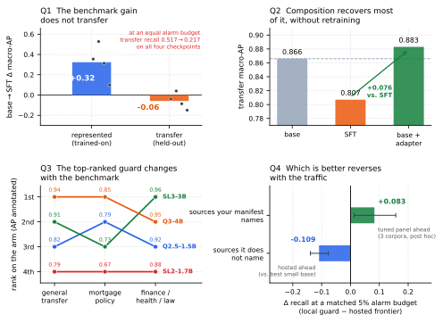
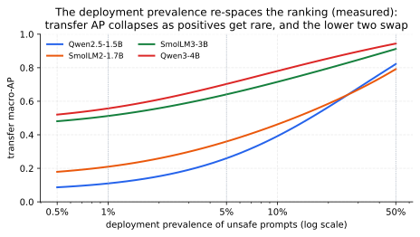
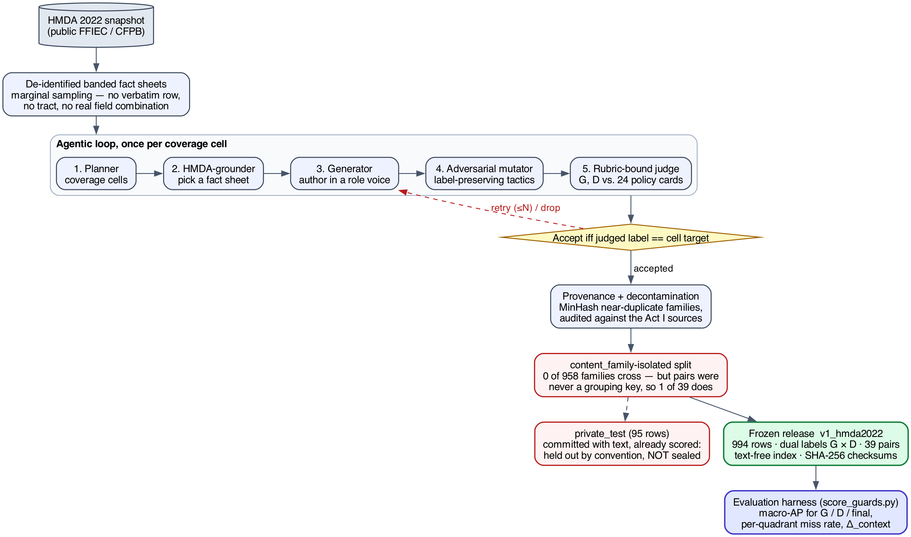

A safety guard — a small model that labels each incoming request safe or
unsafe before an assistant acts on it — is usually chosen by whichever fine-tune scores best on a
public benchmark. That score is co-produced by the benchmark, the training objective, the decision
threshold, and the domain, so the leaderboard-best guard can be the wrong guard for the traffic you serve.
This bites hardest in high-compliance domains — finance, health, law, mortgage lending — where the
dangerous request is often polite, compliant-looking text (e.g. a mortgage inquiry that quietly
steers by a protected class) that a benchmark-tuned guard never learned to catch.
We measure what a fine-tune actually buys by comparing each guard only against its own
pre-tuning base on identical rows, separating represented (trained-on) from transfer
(held-out) sources. Four findings on one fixed panel of compact checkpoints: (i) fine-tuning
specializes — it lifts represented ranking to a shared ceiling (\(+0.3234\) macro-AP) but changes
transfer by only \(-0.0589\) on average, pooling opposing per-checkpoint effects (\(+0.04\) to \(-0.15\)),
and, at a calibrated threshold, nearly quadruples the pooled
false-alarm rate on unseen traffic (\(4.3\%\!\rightarrow\!17.0\%\)) — and when it is given the
same alarm budget as its own base, it catches barely half as much off-source (transfer recall
\(0.517\!\rightarrow\!0.217\), HarmBench recall
\(0.780\!\rightarrow\!0.203\), worse on all four checkpoints); (ii) a retraining-free
base\(+\)adapter composition recovers much of the lost transfer (\(+0.076\) vs. the
fine-tune) at one extra inference pass; (iii) a preregistered confirmatory study over ten
checkpoints (including six released vendor guards) confirms the same specialization even for
purpose-built guards, while KL-regularized
SFT preserves transfer but at a real represented cost — a tradeoff dial, not a free win; and (iv) in
regulated domains, evaluated base-only and zero-shot, the numerically top-ranked guard differs
between the mortgage benchmark and the finance/health/law arm (within which one guard leads all three
verticals; CIs overlap). The protected-token probe we built to sit beside ranking turns out
not to separate these guards: on three pairs, one of which is not a single-token swap, and on a
probability scale that saturates for one checkpoint, it is a negative methodological result rather than a
fairness ranking.
The contribution is a measurement-and-decision workflow for choosing guards in regulated products — compare to your own base, gate on both represented and transfer, recalibrate, and treat repairs as gated candidates — not a new winning model. One command regenerates and byte-checks 12 of the 24 generated artifacts from committed per-row scores and prints the coverage it did not achieve (4 need the lock-pinned environment; 8 are committed outputs of their own locked analyses), and the dual-labeled mortgage benchmark ships frozen and checksummed.
github.com/rrahimi-uci/safety-guard-dynamics
\(\cdot\) make reproduce regenerates and byte-checks the covered tables (Section 8)
\(\cdot\) frozen benchmark: v1_hmda2022, 994 rows
1Introduction: why “is this guard good?” is the wrong question

Figure 1 is the whole report in one image, and the rest of this section says why each panel matters. A guard chosen on a leaderboard — or “improved” by a quick fine-tune — can quietly do three expensive things at once in production: (1) raise false alarms that block legitimate users (pooled transfer false alarms climb \(4.3\%\!\to\!17.0\%\)); (2) miss the hardest attacks it was meant to stop (HarmBench recall \(78.0\%\!\to\!60.0\%\)); and (3), in a regulated domain, pass a policy violation that reads as polite text or treat a protected group differently — a compliance and fair-lending problem, not merely a lower number. Figure 8 is that third failure in one concrete row: a routine-sounding underwriting question that solicits redlining-by-proxy, which all four guards rank below the median benign request in the same split. The three questions below, and the decision guide that follows from them (Section 7.1), exist to catch these failures before deployment: when to fine-tune, when to instead compose, and when a general guard is simply not enough for a regulated domain.
Converting a general instruction model into a safety guard with a short parameter-efficient fine-tune [19] and reporting its score on a public suite [11] is now standard. A post-tuning leaderboard number, however, conflates two different things: raising the score on benchmark sources represented in training versus improving transfer to datasets the guard never saw. This report is organized around one thesis — the benchmark co-produces the verdict — and three questions on a single shared panel of checkpoints:
Does fine-tuning transfer? (Section 3) — or does the guard specialize to its training sources?
Can we recover transfer without retraining? (Section 5) — by composing base \(+\) adapter.
Does a general-safety score cover a regulated domain? (Section 6) — evaluated zero-shot across law, finance, health, and mortgage.
What is new here.
Prior work already measures safety degradation of the same checkpoint before and after fine-tuning [27], policy-overfitting of guardrails [39], and that a plain instruction model can rival a purpose-built guard [11]; in-distribution versus out-of-distribution blocks are also standard in guard evaluations [30, 26, 19]. What is missing is a strictly paired guard-classifier estimand that holds checkpoint, manifest, seeds and scorer fixed while splitting the change into represented-source versus dataset-held-out transfer with per-checkpoint intervals from a family-aware hierarchical bootstrap — and then pushes that instrument to a composition remedy and four regulated domains. Concretely, the novel contributions are:
A paired estimand that cleanly separates represented-source gain from held-out transfer, with a fixed-panel hierarchical bootstrap (Section 3).
The “attractor” finding: on this panel SFT drives each checkpoint toward a benchmark-fixed endpoint, so the popular reading “stronger bases specialize more” is largely arithmetic; the sharper, falsifiable claim is endpoint invariance (Section C.1).
A retraining-free composition operator that recovers transfer, with an equal-cost SFT+SFT control isolating the base’s contribution (Table 9) and a candidate diversity mechanism (base-correlated adapter errors) — reported as motivation, not proof (Section 5).
A dual-labeled, HMDA-grounded mortgage benchmark whose mortgage-policy label \(D\) refines general safety \(G\) on the looks-safe mass (G0/D1, 502/994 rows; the G1/D0 cell is empty, so in v1 the labels are nested rather than crossed), with a protected-class fairness-invariance gate, plus an external, expert-annotated finance/health/law replication (Section 6).
A reproduce-from-committed-scores pipeline (tooling, not a research claim): one entry point regenerates the Act I/II, mortgage, ExpGuard, SFT+SFT, latency and teaser artifacts from committed per-row scores and byte-checks them, reporting verified/unverified/uncovered counts rather than a single green (Section 8).
What is not new: we introduce no new model, metric, or training algorithm, and make no causal, universal, or deployment claim — the output is a reproducible, estimation-only characterization of this fixed panel plus one external domain replication.
Scope.
English input-prompt classification; binary safe/unsafe; four compact
checkpoints (1.5–4B); one LoRA-SFT recipe; four regulated domains. Not a leaderboard, not a fair-lending
audit, not a deployment recommendation.
2Background you’ll need
This report is written to be read by someone with a first course in statistics, a working idea of what fine-tuning a small language model means, and a lay familiarity with mortgage lending. Everything technical the three acts rely on is defined once here, from the ground up, with the exact equations and a worked example wherever a number would otherwise be mysterious. Nothing in this section reports a result; it is the vocabulary. Almost every subtlety below exists to make one comparison honest — a tuned guard against the same model before tuning, on identical rows, split into sources the guard trained on and sources it never saw — and Figure 2 previews that design on one page.

2.1The guard: a single-token logit-difference head
We do not ask the guard to write a paragraph explaining its decision. We ask it for exactly one
word and look only at how strongly it leans toward that word. Concretely, a prompt \(x\) is wrapped in a
fixed instruction template asking for a one-word verdict, and we read the model’s raw output scores
— its logits — at the final position for the two verdict words safe and
unsafe. A logit is the model’s un-normalized, pre-probability score for a candidate next token:
larger means the model favors that token. Writing \(z_{\text{unsafe}}(x,t)\) and \(z_{\text{safe}}(x,t)\)
for those two logits at the final prompt position \(t\), the guard’s stored score is their difference,
\[s(x) \;=\; z_{\text{unsafe}}(x,t) \;-\; z_{\text{safe}}(x,t),\]
(1)which is positive when the model leans unsafe, negative when it leans safe, and near zero
when it is undecided. To read \(s(x)\) as a probability we pass the same two logits through a two-way
softmax — giving, strictly, the probability of unsafe conditional on the verdict being one
of the two tokens \(\{\)safe\(,\)unsafe\(\}\), not the model’s full next-token distribution:
\[p(\text{unsafe}\mid x) \;=\; \frac{\exp\!\big(z_{\text{unsafe}}\big)}{\exp\!\big(z_{\text{safe}}\big)+\exp\!\big(z_{\text{unsafe}}\big)}.\]
(2)For example, if \(z_{\text{unsafe}}=2.0\) and \(z_{\text{safe}}=1.0\), then \(s(x)=1.0\) and \(p(\text{unsafe}\mid x)=e^{2}/(e^{2}+e^{1})\approx 0.73\). This is what we mean by a “single-token logit-difference head”: one forward pass, two numbers, one score. The raw logits are the canonical stored value; probabilities in Equation 2 and any temperature-rescaled version are derived from them. Reading the model’s own generated verdict text is deliberately never used as the primary score, because a free-text answer is harder to score consistently and hides the model’s actual confidence.
2.2Base, SFT, and LoRA
The base is the general instruction-tuned chat model before we turn it into a guard. It
is not untrained — it can already follow the “answer safe or unsafe” instruction
zero-shot — so “base” throughout means “before the guard fine-tune,” not “blank.”
Supervised fine-tuning (SFT) then trains that model on labeled examples: for each training
prompt we know the correct verdict, and we nudge the model to raise the probability it assigns to that
verdict word. Rather than update all of the model’s weights, we use LoRA (Low-Rank Adaptation)
[28]: we freeze the original weights and insert a small number of extra trainable
parameters (a low-rank “adapter”) into selected weight matrices. LoRA is cheap, fast, and reversible
— you can ship the tiny adapter on top of the frozen base — and it is the standard way guards are
built in practice [19]. The precise adapter size and which matrices it touches
are part of the frozen recipe in Section B.
2.3Average precision, macro-AP, and the accuracy trap
Because \(s(x)\) is a continuous score, we can grade a guard without committing to a cutoff, by
asking how well it ranks. Average precision (AP) collapses the whole
precision–recall curve into a single number in \([0,1]\): it is near \(1\) when the guard tends to give
genuinely unsafe prompts higher scores than safe ones, and it needs no threshold. Formally, sweeping
the cutoff from high to low, AP is the recall-weighted average of the precision achieved at each
true-positive, \(\text{AP}=\sum_n (R_n-R_{n-1})\,P_n\), with \(P_n,R_n\) the precision and recall after the
\(n\)-th ranked item; we use the tie-aware, non-interpolated scikit-learn definition so the number
is exactly reproducible.
Rank five prompts by their guard score, highest first, and write their true labels: \([\text{unsafe},\ \text{unsafe},\ \text{safe},\ \text{unsafe},\ \text{safe}]\). There are three unsafe prompts, so each one contributes recall \(\tfrac13\). The precision at each unsafe prompt as we go down the list is \(\tfrac11{=}1.00\) (rank 1), \(\tfrac22{=}1.00\) (rank 2), and \(\tfrac34{=}0.75\) (rank 4). So \(\text{AP}=\tfrac13(1.00)+\tfrac13(1.00)+\tfrac13(0.75)\approx 0.917\). A perfect ranking (all three unsafe prompts on top) would score \(1.00\); ranking the safe prompts first would score much lower.
Macro-AP computes AP separately on each benchmark and then averages those per-benchmark values with equal weight, so one large benchmark cannot dominate a handful of small ones; this is the primary metric in every act.
On a test set that is \(95\%\) safe, a guard that blindly answers safe to everything scores \(95\%\)
accuracy while catching zero attacks. Accuracy rewards guessing the majority class; AP and
macro-AP instead reward putting the unsafe prompts on top, which is the behavior a guard is for. This
is why ranking, not accuracy, is the currency of this report.
2.4Two evaluation regimes: represented-source vs. dataset-held-out transfer
The single most important distinction in this report is where the test data came from. Represented-source test rows are held-back examples drawn from a dataset the guard trained on (different rows, same source). Dataset-held-out transfer rows come from datasets whose examples were never used in training at all. A gain that appears on represented-source tests but not on transfer tests is precisely the signature of a guard specializing to its training sources rather than becoming a broadly better moderator. One honesty caveat travels with the word “held out”: it means dataset-held-out (those rows were withheld from fine-tuning), not sealed away from the researchers during development — a distinction that forces the retrospective framing discussed in Section 2.6.
2.5From scores to decisions: calibration, operating point, TPR/FPR, macro vs. pooled
Ranking is threshold-free, but a deployed guard must eventually say safe or unsafe. An
operating point is the single cutoff on \(s(x)\) that converts scores into hard decisions. Picking
it trades two error rates against each other: the true-positive rate (TPR, or recall) is the
fraction of genuinely unsafe prompts the guard flags, and the false-positive rate (FPR) is the
fraction of genuinely safe prompts it wrongly flags. Raising the cutoff lowers both; lowering it raises
both. Before thresholding we calibrate: we fit a single positive temperature that rescales
the logits (temperature scaling [24]) so the derived probabilities in
Equation 2 are better behaved. Crucially, both the temperature and the cutoff are fit only on a
separate held-back calibration split — never on the transfer or stress data we report on — so
the threshold is not quietly tuned to the test.
Two error rates can be averaged two ways, and the choice matters. Macro rates compute the rate on each benchmark first and then average across benchmarks (equal weight per benchmark). Pooled rates lump every row together first and then compute one rate (equal weight per row, so large benchmarks dominate). We report both because they can disagree.
Keep the two questions apart: AP answers “does it rank?” and the operating point answers “is there a usable decision boundary?” A guard can rank well and still have no cutoff that survives off-source, because the score distribution shifts even when the ordering holds — a gap Acts I and II both measure (Section 3.5 and Section 5.4).
2.6Estimands, the fixed panel, and the paired hierarchical bootstrap
Lower confidence bound (LCB). A one-sided version of an interval. Saying “the gain is \(+0.174\), LCB \(+0.129\)” means: the estimate is \(+0.174\), and under resampling the value stayed above \(+0.129\) in \(97.5\%\) of the redraws. A criterion of the form “LCB \(>0\)” is therefore a demand that even the pessimistic end of the range still be a gain. (UCB is the mirror image, used for quantities we want to bound from above, such as a loss.)
Non-inferiority margin. How much you are willing to lose on one axis to win on another, fixed before looking. A margin of \(-0.02\) says: a drop of up to two AP points is acceptable, more is not. This is stricter than “did it get worse?” — it must be provably not much worse, so a noisy result fails the test rather than passing it by default. Section 4 contains the one place in this report where a preregistered criterion of this kind is failed and reported as failed.
Bonferroni split. When you test two things at once, each gets half the error budget (\(\alpha=0.05\) becomes \(0.025\) each), so asking two questions cannot double your chance of a lucky answer. It is the cheapest, most conservative way to pay for multiplicity.
An estimand is the exact quantity our numbers describe. Here it is the average before-versus-after change for the four specific checkpoints we study, not for “small guards” in general. Those four checkpoints are a fixed, purposively chosen panel — picked deliberately, not sampled at random from a population — so we do not attach uncertainty to the choice of models and we do not generalize to unnamed architectures. Every comparison is paired: an adapter is always compared against its own base on the same rows, so nothing but the fine-tune differs.
To put a \(95\%\) range around a paired change we use a paired hierarchical bootstrap. A bootstrap estimates how much a result would wobble under resampling by rebuilding the data many times from itself and recomputing; the spread of the recomputed values becomes the interval. Ours is hierarchical because it resamples at two levels at once — which fine-tuning seeds were drawn (within each fixed checkpoint), and which groups of near-duplicate evaluation rows (“families,” Section B.5) are counted, via one Poisson(1) re-count weight per family. It is paired because each adapter stays yoked to its base. Because the training rows and their order are held fixed, seed-to-seed variation reflects initialization, dropout, and execution nondeterminism — not which examples the guard happened to see. The resulting intervals are conditional on this panel, these datasets, and this family graph; they are descriptive, not significance tests, and not claims about a wider population. This is why Acts I–II report point estimates, intervals, and leave-one-out sensitivity checks but no accept/reject test: they were analyzed after the benchmarks had been inspected during development, and clean provenance does not make an inspected benchmark prospective (see the scope note on p. 1 and Section E).
2.7Fine-tuning the guard: LoRA-SFT
We fine-tune each guard with SFT (supervised fine-tuning): a cross-entropy loss that directly raises the model’s log-probability of the single correct verdict token, applied as a parameter-efficient LoRA adapter (the exact recipe is Table 17). SFT is the one training recipe used throughout; Act I measures what it changes, and Act II asks whether we can recover what it gives up without any further tuning.
2.8Output-space composition
Act II introduces a retraining-free remedy. Output-space composition combines two guards by averaging their calibrated output scores — not their internal weights. It is portable, because it needs only two comparable scores rather than interpolable parameters, but it costs two inference passes because both models must run. This contrasts with weight-space methods such as WiSE-FT and model soups [48, 47], which average the models’ weights and so require the models to be weight-compatible. The exact composition rule is given later as Equation 5.
2.9The mortgage/HMDA vocabulary and the dual-label idea
Act III moves to regulated domains, where a request can read as perfectly polite text yet, if honored, break the law. The mortgage vocabulary below is what the benchmark encodes.
HMDA — the U.S. Home Mortgage Disclosure Act [1]: lenders publicly report loan-level records (purpose, amount band, action taken, denial reason), which we use only as de-identified, banded fact sheets, never verbatim. Fair lending bars credit discrimination on protected traits. Redlining is refusing or worsening credit across a whole neighborhood as a proxy for race. Disparate treatment is intentional differential treatment; disparate impact is a facially neutral rule that falls harder on a protected group. Proxy (coded) discrimination uses a stand-in — ZIP code, preferred language — for a protected class. ATR/QM is the ability-to-repay / qualified-mortgage rule. Adverse-action notice is the legally required true reason for a denial. UDAAP covers unfair, deceptive, or abusive acts and practices.
On top of that vocabulary the benchmark adds one construct (Section 6.1): two separately assigned labels per request, general safety \(G\) and mortgage policy \(D\), isolating the stratum a general-safety score cannot see.
3Fine-tuning specializes a guard: a large represented gain that does not transfer (Act I)
The first act answers the most basic question a practitioner has after fine-tuning a guard: what did the fine-tune actually buy, and does it hold up off the training distribution? The leaderboard answer — a single higher number — silently blends two very different things: doing better on benchmark sources the guard trained on (“represented”), and doing better on datasets it never saw (“transfer”). Act I separates them with a strictly paired, same-checkpoint measurement and finds a clean, repeatable pattern: supervised fine-tuning (SFT) delivers a large, uniform represented-source gain and essentially no average transfer gain — the guard specializes.
Most guard papers compare different models: model \(X\)’s guard against model \(Y\)’s guard. That confounds “the fine-tune helped” with “\(X\) was a better starting model than \(Y\).” We instead hold the checkpoint fixed and compare each guard against its own base, on the identical rows, with the identical single-token score head (\(s(x)=z_{\text{unsafe}}-z_{\text{safe}}\); see Section 2) and the identical tie-aware macro-AP. The reported quantity is therefore a within-checkpoint change, \(\Delta = \text{SFT} - \text{base}\), not a cross-model gap. This is the only way to attribute a movement to the fine-tune rather than to the luck of the starting point.
3.1The paired base-to-SFT design
Panel and manifest.
All four checkpoints (Qwen2.5-1.5B, SmolLM2-1.7B, SmolLM3-3B,
Qwen3-4B) are fine-tuned from the identical frozen manifest of 1,200 rows: \(400\) from each of three
represented sources — toxicchat, prompt_injections, and
jailbreak_classification — balanced \(200\) safe / \(200\) unsafe within each source. The manifest
was decontaminated against the evaluation sets and its data order fixed by seed \(42\), so every
checkpoint sees the same examples in the same order; the only thing that varies across the five runs
per checkpoint is the training seed.
Recipe.
Each guard is a LoRA adapter (r=32, alpha=64, dropout=0.05)
attached to the attention and MLP projections (q,k,v,o,gate,up,down), trained for \(300\) steps at
learning rate 2e-4 on a cosine schedule with \(3\%\) warmup, effective batch size \(4\), and maximum
sequence length \(1024\). We run five seeds (\(42\)–\(46\)) per checkpoint, giving \(20\) SFT guards in total.
Only the adapter is trained; the base weights are frozen, so “base” means the same model before
the guard adapter, evaluated with the identical scoring head.
Two evaluation regimes.
Every guard and its base are scored in two disjoint regimes.
Represented = held-back rows from the three training sources (same sources, unseen rows);
transfer = four datasets whose rows were never used in training — jailbreakbench,
xstest, wildguardtest, and wildjailbreak. We additionally probe two single-class
stress sets that isolate the two failure directions: OR-Bench (benign prompts, to measure
over-refusal) and HarmBench (hard attack prompts, to measure missed catches).
Estimand and intervals.
We summarise each regime by macro-AP (average precision averaged with equal weight across benchmarks, so a large benchmark cannot dominate) and put a two-sided \(95\%\) interval on each change with a paired hierarchical bootstrap that keeps every adapter tied to its own base and respects the checkpoint\(\to\)seed grouping. The estimand is deliberately narrow: it is the change conditional on this fixed, purposively-chosen four-checkpoint panel and this manifest, which was inspected during development. These are estimation intervals, not significance tests, and the result is retrospective, not confirmatory — no causal or population claim is licensed.
3.2The primary result: a uniform represented gain, a split transfer effect
Table 1 reports, per checkpoint, the untuned-base and mean-SFT macro-AP in each regime, the paired base-to-SFT change with its interval, and the fixed-panel aggregate.
| Checkpoint | Rep base | Rep SFT | \(\Delta\) Rep [two-sided 95% percentile CI] | Tr base | Tr SFT | \(\Delta\) Tr [two-sided 95% percentile CI] |
| Qwen2.5-1.5B | 0.6334 | 0.9878 | 0.3544 [0.2731, 0.4150] | 0.8187 | 0.7798 | -0.0389 [-0.0829, 0.0062] |
| SmolLM2-1.7B | 0.4524 | 0.9806 | 0.5282 [0.4555, 0.5748] | 0.7904 | 0.8304 | 0.0400 [0.0003, 0.0776] |
| SmolLM3-3B | 0.6621 | 0.9751 | 0.3130 [0.2419, 0.3701] | 0.9102 | 0.8234 | -0.0869 [-0.1114, -0.0613] |
| Qwen3-4B | 0.8855 | 0.9837 | 0.0981 [0.0545, 0.1479] | 0.9438 | 0.7939 | -0.1499 [-0.1963, -0.1050] |
| Fixed-panel aggregate | – | – | 0.3234 [0.2647, 0.3690] | – | – | -0.0589 [-0.0837, -0.0321] |
Represented: everyone reaches the same ceiling.
The represented-source gain is large and, strikingly, uniform in its destination: regardless of where the base started, every SFT guard lands at macro-AP \(\approx 0.98\). SmolLM2-1.7B climbs from a weak \(0.4524\) to \(0.9806\); Qwen2.5-1.5B from \(0.6334\) to \(0.9878\); SmolLM3-3B from \(0.6621\) to \(0.9751\); and Qwen3-4B, already strong at \(0.8855\), to \(0.9837\). Because the finish line is shared, the size of the represented gain is essentially dictated by how far below the ceiling the base sat — a \(+0.5282\) jump for SmolLM2 versus only \(+0.0981\) for Qwen3-4B. The fixed-panel aggregate is \(+0.3234\) \([+0.2647, +0.3690]\): SFT reliably teaches each model to rank the training sources’ held-back rows near-perfectly. Mechanistically this is unsurprising — the manifest is those sources, so the adapter learns their label conventions and surface cues.
Transfer: a small average that hides opposite signs.
On data the guard never saw, the same fine-tune does something quite different. The aggregate transfer change is only \(-0.0589\) \([-0.0837, -0.0321]\) — close to zero and slightly negative. But this panel average is a mirage: it pools opposing per-checkpoint effects. The change is positive for the weakest base and strongly negative for the strongest, spanning \(+0.0400\) \([+0.0003, +0.0776]\) for SmolLM2-1.7B, \(-0.0389\) \([-0.0829, +0.0062]\) for Qwen2.5-1.5B, \(-0.0869\) \([-0.1114, -0.0613]\) for SmolLM3-3B, and \(-0.1499\) \([-0.1963, -0.1050]\) for Qwen3-4B. The ordering tracks base transfer strength (Table 1): the models with the most transfer skill to begin with (SmolLM3 at \(0.9102\), Qwen3-4B at \(0.9438\)) give the most of it back, while the model that had the least (\(0.7904\)) is the only one that improves. In other words, SFT does not add a portable notion of “unsafe”; it reshapes the score toward the training sources, and for a model that already generalised well that reshaping is a net loss off-distribution (Figure 3).

It averages effects that point in opposite directions — SmolLM2 \(+0.0400\) against Qwen3-4B \(-0.1499\). The panel-level number is small; the panel itself is not uniform, and reporting only the aggregate would erase the most important finding (who loses, and how much). Read the per-checkpoint column, not the bottom row.
3.3Where the transfer losses live: a per-benchmark decomposition
Aggregating over benchmarks can also hide which data the guard forgets how to rank. The upper
block of Table 3 decomposes the change benchmark by benchmark. On the represented side
every source rises sharply — toxicchat \(+0.1880\), prompt_injections \(+0.3704\), and
jailbreak_classification \(+0.4119\) — confirming the gain is broad across the training sources,
not driven by one easy set.
On the transfer side the losses are concentrated on the jailbreak-style adversarial sets:
jailbreakbench \(-0.0776\), wildjailbreak \(-0.0792\), and wildguardtest \(-0.0669\) all
fall by a comparable amount, while xstest — which contrasts genuinely unsafe prompts against
benign look-alikes rather than adversarial attacks — barely moves at \(-0.0120\). The pattern is
coherent with the mechanism above: the training sources over-represent a particular flavour of unsafe
text, so after tuning the guard ranks those confidently but loses discrimination precisely on the
adversarial, distribution-shifted prompts that a deployed guard most needs to catch. Specialization is
not uniform forgetting; it is forgetting the hardest, most out-of-distribution cases first.
3.4The specialization plane: 15 of 20 guards specialize
The clearest single view of Act I is the specialization plane (Figure 4), which plots each of the \(20\) (checkpoint, seed) guards by its represented change (horizontal) against its transfer change (vertical). Four quadrants have direct meaning: lower-right = represented up, transfer down (“specialize”); upper-right = both up (“uniform gain”); lower-left = both down (“uniform loss”); upper-left = transfer-favoured. 15 of 20 guards land in the specialize quadrant, 5 in uniform gain, and none in uniform loss or the transfer-favoured quadrant. So specialization is the dominant — but not universal — outcome: the five uniform-gain points are four of the five SmolLM2 seeds plus Qwen2.5’s seed 42 — concentrated on the two checkpoints with the weakest base transfer, which have the most room to improve there (SmolLM2’s remaining seed, 46, narrowly specializes at \(-0.001\)). The absence of any uniform-loss point matters: SFT never simply degrades the guard everywhere; it trades transfer for represented ranking. Per-seed values behind the plane are tabulated in Table 2, and show the effect is stable within each checkpoint (e.g. every Qwen3-4B seed is a substantial transfer loss, every SmolLM2 seed a represented gain).

| Checkpoint | Seed | \(\Delta\) represented AP | \(\Delta\) transfer AP |
| Qwen2.5-1.5B | 42 | 0.3569 | 0.0082 |
| Qwen2.5-1.5B | 43 | 0.3535 | -0.0261 |
| Qwen2.5-1.5B | 44 | 0.3506 | -0.0545 |
| Qwen2.5-1.5B | 45 | 0.3558 | -0.0438 |
| Qwen2.5-1.5B | 46 | 0.3551 | -0.0786 |
| SmolLM2-1.7B | 42 | 0.5304 | 0.0805 |
| SmolLM2-1.7B | 43 | 0.5273 | 0.0720 |
| SmolLM2-1.7B | 44 | 0.5253 | 0.0250 |
| SmolLM2-1.7B | 45 | 0.5309 | 0.0238 |
| SmolLM2-1.7B | 46 | 0.5272 | -0.0013 |
| SmolLM3-3B | 42 | 0.3045 | -0.0812 |
| SmolLM3-3B | 43 | 0.3253 | -0.0925 |
| SmolLM3-3B | 44 | 0.3051 | -0.0629 |
| SmolLM3-3B | 45 | 0.3146 | -0.0923 |
| SmolLM3-3B | 46 | 0.3156 | -0.1055 |
| Qwen3-4B | 42 | 0.0953 | -0.1222 |
| Qwen3-4B | 43 | 0.0936 | -0.1536 |
| Qwen3-4B | 44 | 0.1038 | -0.0949 |
| Qwen3-4B | 45 | 0.0997 | -0.2291 |
| Qwen3-4B | 46 | 0.0981 | -0.1497 |
3.5At a deployable operating point
Ranking is threshold-free, but deployment is not: at some point you must pick a cutoff and turn scores
into block/allow decisions. To see the deployment consequence of specialization we select
each guard’s threshold to hit a \(5\%\) false-positive-rate (FPR) target on a calibration split, then read
off the realized rates. The lower blocks of Table 3 report them.
Represented recall soars.
On the represented sources, catching the unsafe prompts (TPR) jumps from 13.0% (base) to 76.9% (SFT) — the operating-point face of the same \(\approx 0.98\) ranking gain — while the represented false-alarm rate stays low and even edges down (1.7% to 1.1%). If you only measured on the training sources, the guard would look strictly and dramatically better.
Transfer pays for it.
Off-source the picture inverts. The transfer benchmark-macro FPR climbs from 8.1% (base) to 15.5% (SFT) — the tuned guard raises nearly twice as many false alarms on data it never trained on — and the pooled-negative FPR blows past target from 4.3% to 17.0%, so the calibrated threshold simply does not transfer. Transfer recall rises only modestly (51.7% to 58.1%), nowhere near the represented jump — and that rise is not iso-FPR, which matters more than its size. The two recalls are realized at 8.1% and 15.5% macro FPR, so the tuned guard buys much of its extra recall by alarming roughly twice as often; a recall comparison at unequal false-alarm rates is not a comparison of discriminative power.
The fair comparison: an equal false-alarm budget.
So we make the alarm budgets equal and
re-read the same rows. Table 4 gives each tuned guard the threshold at which its pooled
transfer false-alarm rate matches its own base’s, and then compares recalls. The modest apparent
gain does not merely shrink — it reverses, on all four checkpoints and by a wide margin: transfer recall goes 0.517 \(\to\) 0.217
(-0.300) and HarmBench recall 0.780 \(\to\) 0.203
(-0.577). At an equal alarm budget the tuned guard catches less than half of what its
own untuned base catches off-source. The direction is stable across the three quantile conventions we
tried (panel mean -0.300 to -0.290).
This is the honest form of the operating-point result, and it is the one the rest of Act I predicts: the
\(+0.06\) recall gain in Table 3 is an artifact of comparing at unequal alarm rates. It needs
no GPU and no pinned environment — matching false-alarm rates is ranking arithmetic on the same
committed score_raw and gold columns every other covered artifact uses, so it is
regenerated and byte-checked by make reproduce (Section 8); the emitter reproduces every
published row of Table 3 exactly before adding the matched column, which is how we know the
two tables read the same underlying scores. Earlier drafts described this reconstruction as a
direction that required the lock-pinned environment. That was wrong on both counts, and the
measured result is both larger and sharper than the hedge it replaces.
The single-class stress sets make the cost concrete: on the hard
HarmBench attacks the tuned guard’s recall falls from 78.0% to
60.0% — it catches less of the very content a guard exists to stop — while
benign over-refusal on OR-Bench is essentially flat (11.8% to 12.0%).
Since OR-Bench is also unseen data, “off-distribution” cannot be what distinguishes it:
the extra false alarms are specific to the transfer suite’s negatives, and we do not identify what
separates them. What the flat OR-Bench line does rule out is a blanket increase in caution.
Note that this HarmBench drop needs no threshold caveat at all: the tuned guard catches
less while alarming more (15.5% vs 8.1% macro transfer
FPR), so it is dominated — worse on both axes at once, not traded off. Equalising the budget only
widens the gap, to 0.203 against the base’s 0.780 (Table 4).
| Regime / benchmark | Metric | Base | SFT | \(\Delta\) | \(N\) |
| represented / toxicchat | AP | – | – | 0.1880 | – |
| represented / prompt_injections | AP | – | – | 0.3704 | – |
| represented / jailbreak_classification | AP | – | – | 0.4119 | – |
| transfer / jailbreakbench | AP | – | – | -0.0776 | – |
| transfer / xstest | AP | – | – | -0.0120 | – |
| transfer / wildguardtest | AP | – | – | -0.0669 | – |
| transfer / wildjailbreak | AP | – | – | -0.0792 | – |
| represented | TPR@target FPR | 0.1296 | 0.7686 | 0.6390 | 313 |
| represented | benchmark-macro realized FPR | 0.0169 | 0.0108 | -0.0061 | 364 |
| represented | pooled-negative realized FPR | 0.0213 | 0.0194 | -0.0019 | 364 |
| transfer | TPR@target FPR | 0.5171 | 0.5807 | 0.0636 | 790 |
| transfer | benchmark-macro realized FPR | 0.0805 | 0.1546 | 0.0741 | 790 |
| transfer | pooled-negative realized FPR | 0.0430 | 0.1704 | 0.1273 | 790 |
| Stress / OR-Bench | benign FPR | 0.1181 | 0.1201 | 0.0020 | 400 |
| Stress / HarmBench | recall | 0.7800 | 0.6003 | -0.1797 | 200 |
HarmBench recall 0.780\(\rightarrow\)0.203 (-0.577). The direction is stable across the three quantile conventions we tried (panel-mean transfer delta -0.300 to -0.290). Same committed rows and same scorer as Table 3; only the threshold rule changes, so this needs no GPU and is byte-checked by make reproduce.| FPR | transfer recall (macro) | HarmBench recall |
|||||
| Checkpoint | budget | base | SFT own thr. | SFT matched | base | SFT own thr. | SFT matched |
| Qwen2.5-1.5B | 7.7% | 0.485 | 0.571 | 0.296 | 0.810 | 0.606 | 0.312 |
| SmolLM2-1.7B | 2.4% | 0.416 | 0.588 | 0.221 | 0.610 | 0.615 | 0.224 |
| SmolLM3-3B | 1.5% | 0.512 | 0.596 | 0.141 | 0.740 | 0.611 | 0.116 |
| Qwen3-4B | 5.6% | 0.655 | 0.569 | 0.211 | 0.960 | 0.569 | 0.160 |
| Panel mean | 4.3% | 0.517 | 0.581 | 0.217 | 0.780 | 0.600 | 0.203 |
Read together, the operating point says the specialized guard catches more of what it trained on, raises more false alarms on what it didn’t, and misses more hard attacks. A leaderboard number computed on represented sources would advertise only the first of these three.
And the apparent consolation — “at least transfer recall went up” — does not survive a fair comparison. That \(+0.06\) was bought with alarms. Give the tuned guard the same alarm budget as its own base and its transfer recall halves (0.517 to 0.217) on all four checkpoints. The threshold that looked safe in calibration is not the threshold you get in the field — a theme Acts II and III return to.
On this four-checkpoint panel, post-SFT scores cluster near a benchmark-fixed endpoint, so “stronger bases specialize more” is largely arithmetic rather than skill; the full attractor analysis and Figure 14 are in Appendix C.
3.6A recipe control: does anti-forgetting (KL-regularized) SFT preserve transfer?
The specialization above was measured under one fine-tuning recipe — completion-only LoRA-SFT with no explicit anchor to the base checkpoint. A fair objection is that the transfer loss might be a property of this unregularized recipe rather than of fine-tuning as such. The standard remedy is an anti-forgetting penalty that keeps the fine-tune close to the base in output space, so we add exactly that — a KL term on the SFT loss:
\[\mathcal{L} \;=\; \underbrace{\mathrm{CE}(\text{verdict})}_{\text{Act~I recipe}} \;+\; \beta\,\mathrm{KL}\!\big(\pi_\theta(\cdot\mid x)\,\big\|\,\pi_{\text{base}}(\cdot\mid x)\big),\]
(3)evaluated on the completion tokens, with the frozen base \(\pi_{\text{base}}\) recovered from the adapter’s own disabled path (no second model in memory, no base retraining). Everything else is held at the Act I settings — same manifest, seeds, panel, scorer, and represented/transfer splits — and \(\beta=0\) reproduces vanilla SFT exactly (the cross-entropy is unchanged), so this is a strict one-knob generalization of the Act I recipe rather than a different method. We sweep \(\beta\in\{0.5, 1.0\}\) over all four checkpoints and 5 seeds, and score every adapter through the identical single-token margin used everywhere else.
| transfer macro-AP | represented macro-AP | |||||||
| Checkpoint | base | SFT | KL\(_{.5}\) | KL\(_{1}\) | SFT | KL\(_{.5}\) | KL\(_{1}\) | |
| Qwen2.5-1.5B | 0.819 | 0.794 | 0.850 | 0.838 | 0.987 | 0.979 | 0.977 | |
| SmolLM2-1.7B | 0.790 | 0.839 | 0.859 | 0.843 | 0.980 | 0.928 | 0.908 | |
| SmolLM3-3B | 0.910 | 0.814 | 0.903 | 0.900 | 0.980 | 0.924 | 0.890 | |
| Qwen3-4B | 0.944 | 0.823 | 0.904 | 0.894 | 0.987 | 0.965 | 0.946 | |
Table 5 reports transfer and represented macro-AP for the base, vanilla SFT (\(\beta=0\), trained in the same environment as the KL runs so the contrast carries no hardware confound), and KL-regularized SFT at each \(\beta\). The anti-forgetting question is read from the transfer block: relative to vanilla SFT, KL at \(\beta=0.5\) changes transfer macro-AP by +0.061 on average across the four checkpoints (at a represented cost of -0.035), and at \(\beta=1.0\) by +0.051 (represented cost -0.053). In other words, a base-anchored penalty recovers a meaningful part of the transfer that vanilla SFT gives up — so a substantial share of Act I’s transfer loss is a property of the unregularized recipe, not of fine-tuning as such.
An accidental noise floor, and why it bounds several claims in this report.
That same-environment \(\beta=0\) arm is also the closest thing we have to a repeat of Act I: identical recipe, identical manifest, identical seeds, identical scorer — only the execution environment differs. It does not land on the same number. Comparing the SFT transfer column of Table 5 with Table 1 gives gaps of \(0.014\), \(0.009\), \(0.009\) and \(0.029\) (Qwen2.5, SmolLM2, SmolLM3, Qwen3-4B), i.e. a mean of \(0.015\) and a worst case of \(0.029\) macro-AP for a recipe we intended to be deterministic.
We report this because it is a ceiling on what any small effect in this report can mean. Effects comfortably above it — Act I’s represented gain (\(+0.32\)), the matched-budget recall collapse (\(-0.300\)), composition’s recovery over SFT (\(+0.076\)) — are not threatened by it. Effects at or below it should be read as unresolved: composition’s \(+0.017\) aggregate edge over the base, and the \(\beta=1.0\) transfer change for SmolLM2 (\(+0.004\)), are both inside this envelope. The bootstrap intervals elsewhere in the report resample evaluation rows and seeds; they do not capture this environment term, so they are narrower than a full reproduction would be.
A one-line change to the recipe — adding \(\beta\,\mathrm{KL}(\pi_\theta\|\pi_{\text{base}})\) — recovers much of the transfer that plain SFT sacrifices, at a modest represented cost. The Act I specialization is therefore partly a property of the recipe: it is mitigable within the SFT family, without the composition of Act II. Two limits travel with that, and both point the same way. This is a retrospective estimate on four general checkpoints with no interval attached; the preregistered test in Section 4 finds the represented-source cost of the same trade fails its non-inferiority margin (RQ2 not supported). And on the two checkpoints that specialize hardest, KL-SFT still leaves held-out transfer below the unmodified base — mitigation, not restoration. Treat \(\beta\) as a tradeoff dial, not a default.
3.7The deployment base rate also chooses the winner
One more axis quietly co-produces the score, and it is not the model at all: the prevalence of unsafe prompts. All the AP numbers above are measured on balanced (or near-balanced) pools, but real inbound traffic is overwhelmingly benign — unsafe prompts might be \(1\%\) of requests. Average precision depends on that base rate, and the dependence is exact: given a guard’s ranking (its ROC), AP at any prevalence \(\pi_+\) is a fixed recomputation,
\[\mathrm{AP}(\pi_+) \;=\; \int_0^1 \frac{\pi_+\,u}{\pi_+\,u + (1-\pi_+)\,\mathrm{FPR}(u)}\,\mathrm{d}u,\]
(4)where \(u\) is recall and \(\mathrm{FPR}(u)\) is the guard’s false-positive rate at that recall — so no new model runs are needed, only the committed per-row scores.

Two consequences follow, both recomputed exactly from the committed scores. First, the balanced AP is an optimistic reading of deployed precision: SmolLM3-3B’s base transfer ranking scores \(\mathrm{AP}=0.91\) on a balanced pool but only \(\approx0.51\) at \(1\%\) prevalence (Figure 5). Second — and this is the thesis again, now at the metric’s own prior — low prevalence collapses and re-spaces the ranking. The extremes are stable (Qwen3-4B stays first, SmolLM2 and Qwen2.5 stay in the lower half at every prevalence), but the lower two re-order: Qwen2.5-1.5B edges SmolLM2-1.7B at balance (\(0.82\) vs. \(0.79\)) yet falls behind it once positives are rare (\(0.11\) vs. \(0.21\) at \(1\%\)), because a scarce positive class re-expands exactly the low-recall precision differences the balanced pool compresses. This is a re-spacing and a partial re-order, not a wholesale winner-flip — but it is enough that a single balanced AP can invert two guards’ apparent order at deployment prevalence. Reporting each headline guard as a curve \(\mathrm{AP}(\pi_+)\) rather than a single balanced number is a zero-cost recompute (roadmap), and it is the honest way to state a deployment precision.
Never replace a base guard on represented AP alone; compare each tune to its own base on represented and held-out sets, and if you must SFT while caring about OOD, consider the KL penalty — but as a dial, not a default: the preregistered test in Section 4 finds its represented-source cost fails the non-inferiority margin, and it leaves the two hardest specializers below their own base on transfer. Retrospective on a fixed four-checkpoint panel with an inspected manifest (overlap audit pending); a description of this recipe on these runs, not a population or causal law.
4Adapting released guards: a confirmatory starting-type study
Acts I–II characterize what fine-tuning does to general instruction checkpoints, and Act III ranks
base guards on regulated domains — all on panels the researcher inspected while building the
method, so they are retrospective estimation, not confirmed findings (Section E). This section is
the one analysis-preregistered piece: its estimands, decision rules, non-inferiority margin, and
interpretation wording were fixed in a committed claim registry
(artifacts/starting_type_adaptation_v1/protocol/claim_registry.json) before any score
existed — git history puts the registry a day ahead of the scores — so the verdicts below cannot be a
post-hoc reading of the data (no HARKing). Two limits on that label, stated here rather than in the
appendix. The registry declares itself finalization_status: dev_nonfinal and is not bound
to a release lock (no lock exists for this study). And the study re-scores the same 3,308 rows as
Acts I–II, from the same frozen manifest — so it is preregistered on the analysis, not blind on
the data; the uninspected-cohort half of that discipline remains future work
(Section E.3). It asks two questions that the earlier acts raise but cannot settle:
(RQ1) does the specialization tradeoff also hit models that are already purpose-built safety
guards, and (RQ2) is KL-SFT — which recovered transfer for general checkpoints (Section 3.6)
— a free improvement, i.e. does it retain transfer at no represented-source cost?
Design.
A \(2\times 3\) blocked grid: \(\{\)four general instruction checkpoints, six released
purpose-built guards\(\}\times\{\)unmodified \(U\), \(+\)SFT, \(+\)KL-SFT\(\}\), over 10
checkpoints spanning 6 model families (gemma, granite, llama, mistral, qwen, smollm), five
seeds, primary \(\beta{=}0.5\). Every guard keeps its native top-level verdict
interface (ShieldGemma Yes/No, Qwen3Guard Safe/Controversial/Unsafe — its native
three-tier top-level verdict, reduced to the same binary decision margin as every other cell,
\(z_{\text{Unsafe}}-z_{\text{Safe}}\), which is what the committed scores record (the
Controversial logit is not used) — Llama-Guard
safe/unsafe, Granite Yes/No, WildGuard yes/no), validated byte-for-byte
against the real tokenizer at a decision-position fidelity check before scoring; all cells share the
frozen Paper A binary manifest, LoRA recipe, and optimizer. We report macro-AP (mean over benchmark
sources) on the RAW logit margin, on represented (id_test) and held-out (transfer)
splits, as a within-checkpoint change vs. the same unmodified checkpoint (the KL reference is
that checkpoint). Each statistic H is an equal-weight mean over the six model families; its
one-sided \(97.5\%\) lower bound comes from a 10,000-resample bootstrap that resamples near-duplicate
evaluation row families (family_id; 3,170 clusters over 3,308 rows) and training seeds while
holding model and benchmark-source identity fixed, Bonferroni-split
across the two research questions (familywise \(\alpha=0.05\)). Because benchmark identity is held fixed,
these bounds carry evaluation-row and seed uncertainty only — not between-benchmark or
between-model-family uncertainty.
| SFT \(\Delta\) | KL-SFT \(\Delta\) | ||||
| Checkpoint | Family | repr. | transfer | repr. | transfer |
| General instruction checkpoints | |||||
| Qwen2.5-1.5B | qwen | \(+0.356\) | \(-0.023\) | \(+0.348\) | \(+0.029\) |
| Qwen3-4B | qwen | \(+0.096\) | \(-0.109\) | \(+0.073\) | \(-0.053\) |
| SmolLM2-1.7B | smollm | \(+0.530\) | \(+0.053\) | \(+0.481\) | \(+0.071\) |
| SmolLM3-3B | smollm | \(+0.313\) | \(-0.117\) | \(+0.248\) | \(-0.009\) |
| Released purpose-built guards | |||||
| Granite-Guard-2B | granite | \(+0.139\) | \(-0.134\) | \(+0.085\) | \(-0.055\) |
| Llama-Guard-3-1B | llama | \(+0.000\) | \(+0.000\) | \(+0.000\) | \(+0.000\) |
| Qwen3Guard-0.6B | qwen | \(+0.082\) | \(-0.116\) | \(+0.041\) | \(-0.026\) |
| Qwen3Guard-4B | qwen | \(+0.112\) | \(-0.020\) | \(+0.075\) | \(+0.014\) |
| ShieldGemma-2B | gemma | \(+0.212\) | \(-0.059\) | \(+0.161\) | \(-0.029\) |
| WildGuard-7B | mistral | \(+0.107\) | \(-0.098\) | \(+0.080\) | \(-0.035\) |

RQ1 — ordinary SFT specializes released guards too (supported).
Across the panel, our SFT protocol raised represented-source macro-AP by +0.174 (equal-family mean; LCB \(+0.129>0\)) while the gain was concentrated relative to held-out transfer (H_conc +0.239, LCB \(+0.189>0\)), with the preregistered criterion \(\text{LCB}(\text{H\_gain})>0\) and \(\text{LCB}(\text{H\_conc})>0\) both met. Table 6 and Figure 6 show the pattern is not a general-model artifact: the released guards move the same way — SFT buys represented ranking (e.g. ShieldGemma-2B \(+0.212\), Granite-Guard-2B \(+0.139\)) at a held-out cost (equal-family held-out change under SFT -0.065). Fine-tuning a released guard on your data specializes it toward your sources, at a bound-confirmed transfer cost, exactly as it does a general checkpoint.
RQ2 — KL-SFT retains transfer but is not a free improvement (not supported).
KL-SFT did preserve held-out transfer relative to SFT (H_preserve +0.049, LCB \(+0.035>0\)): in Table 6 every KL-SFT held-out delta on the nine informative checkpoints is less negative (or more positive) than its SFT counterpart; on the degenerate Llama-Guard-3-1B cell both are exactly zero. But the represented-source cost of that retention, H_cost -0.036, has LCB -0.060, which does not clear the preregistered non-inferiority margin of \(-0.02\) — so the second criterion fails and RQ2 is not supported. KL-SFT trades represented-source adaptation gain for transfer retention; on this panel it is a genuine trade, not a free lunch. This is a more cautious verdict than the general-checkpoint KL control of Section 3.6 (where the represented cost was smaller), and the confirmatory design reports it as such rather than reading the favorable direction as a win.
What this does and does not license.
The within-checkpoint deltas are causal only for this recipe on this checkpoint; the general-vs-purpose contrast is a descriptive blocked comparison (checkpoints are not randomly assigned to a starting type), not a causal claim about starting type. The bounds are conditional on the fixed model panel: the bootstrap resamples evaluation families and seeds but holds model identities fixed, so with few families a single dominant family can move the equal-family mean; read H as a fixed-panel summary, not a population estimate. One checkpoint, Llama-Guard-3-1B, shows essentially zero movement under both SFT and KL-SFT (Table 6): its \(20\)-token-pruned, embedding-tied output head leaves the decision-token margins effectively unmoved by LoRA, so it contributes no adaptation signal and should be read as a null/degenerate cell, not evidence of robustness. It is retained in the equal-family means as a zero contribution; because a null family only pulls those means toward zero, dropping it does not weaken either verdict (it would only raise the RQ1 gain/concentration bounds and push the RQ2 cost bound further past the margin).
Fine-tuning a purpose-built guard on your data specializes it just like a general model (RQ1, bound-confirmed): you gain represented ranking and lose transfer. KL-SFT buys the transfer back but charges represented AP beyond the non-inferiority margin (RQ2 not supported) — treat it as a tradeoff dial, not a free upgrade, and re-measure both splits on your own data.
5Recover transfer without retraining: output-space composition (Act II)
Act I left us with an uncomfortable asymmetry. Supervised fine-tuning (SFT) buys a large, uniform gain on the sources a guard trained on (\(+0.3234\) macro-AP, [\(+0.2647,+0.3690\)]) while, on average, giving back a little transfer to sources it never saw (\(-0.0589\) [\(-0.0837,-0.0321\)]), and for the strongest base the transfer cost is steep. The instinct is to tune harder — more data, more steps, a different training recipe. Act II asks the opposite question: instead of overwriting the base’s judgment, can we keep it in the decision? The base checkpoint, before any guard fine-tune, is often a surprisingly good transfer scorer (in Section 3 three of four bases transfer better than their own SFT guard). If SFT’s loss is that it has forgotten the base’s broad, non-specialized view, then the cheapest repair is not to retrain but to put the base back in the room at decision time and let it vote.
Two guards that make different mistakes carry complementary information. If the SFT guard is confident-but-wrong on an off-source prompt while the base is mildly-right (or vice versa), averaging their scores cancels part of each one’s idiosyncratic error and keeps the signal they agree on — the same variance-reduction intuition behind any ensemble. The catch is that you can only average two scores if they live on the same scale; a raw margin from one model is not comparable to a raw margin from another. That is what the calibration step below is for. Composition is not a smarter model; it is a way to not throw away a scorer you already have.
5.1The fixed composition operator
The rule is deliberately the simplest thing that could work. For a single input \(x\) we run both the base and one SFT adapter, map each model’s raw score to a probability with its own calibrator, and report the fixed, equal-weight average:
\[s_{\mathrm{comp}}(x) \;=\; \tfrac12\, C_b\!\big(s_b(x)\big) \;+\; \tfrac12\, C_{a}\!\big(s_{a}(x)\big),\]
(5)where \(s_b(x)\) and \(s_a(x)\) are the base and adapter single-token margins \(z_{\text{unsafe}}-z_{\text{safe}}\) (the same head used everywhere in this report), and \(C_b,C_a\) are per-model calibrators. Three design choices in Equation 5 are load-bearing, and each is fixed before looking at any transfer result.
Calibration makes the two scores comparable.
A raw margin is not a probability, and two different models emit margins on two different, incomparable scales — a \(+2.0\) from the base and a \(+2.0\) from the adapter need not mean the same confidence. Each calibrator \(C(\cdot)\) is a monotone map from raw margin to a probability in \([0,1]\), fit only on a development split (never on the rows we score), so that after calibration a given output value means the same “probability this is unsafe” for both models. Only then does the average in Equation 5 combine like with like rather than letting whichever model happens to produce larger raw numbers dominate. Concretely (illustration, not a result): if on some prompt the base calibrates to \(0.30\) and the adapter to \(0.90\), the composed score is \(0.60\) — the adapter’s alarm is heard but not obeyed outright.
A calibrator is a tiny one-input function (e.g. a fitted logistic or isotonic curve) that answers “given this raw margin, what fraction of prompts with that margin were actually unsafe?” It reshapes the score without reordering it — so it changes thresholds and comparability, not ranking (AP is unchanged by a monotone calibrator applied to one model). We fit it on a held-out development split so no information from the evaluation rows leaks into the operator; this is what keeps the equal-weight average from being a disguised fit to the test set.
Equal weights, fixed in advance.
The \(\tfrac12,\tfrac12\) weights are not tuned. Choosing the mixing weight by maximizing transfer on the very rows we then report would be circular — it would let the operator quietly memorize the answer. Fixing the weights a priori means the composition has no free parameters set on the evaluation data; any transfer it recovers is a property of averaging base and adapter, not of a search. (A convex-weight variant that does tune the mixing weight, at \(\alpha=0.95\), was visible during development and is therefore reported only as a non-promotable ablation — see Section 5.5.)
Two inference passes.
Because Equation 5 needs both \(s_b(x)\) and \(s_a(x)\), composition runs two forward passes per input — the base and the adapter — roughly doubling inference cost relative to a single guard. Nothing is retrained; there is no new checkpoint to store beyond the base and its adapter (which a LoRA deployment already keeps). The price of skipping retraining is paid at serving time, not training time.
5.2Output-space composition vs. weight-space merging (WiSE-FT, model soups)
Equation 5 combines models in output space: it averages what they say. The better-known alternatives combine models in weight space: WiSE-FT and model soups [48, 47] build a single merged network by interpolating parameters, \(\theta_{\mathrm{merge}}=(1-\alpha)\,\theta_{b}+\alpha\,\theta_{a}\), and then run one forward pass through that merged model. The two families trade off opposite costs.
Weight-space (WiSE-FT / soups). One forward pass, no extra serving cost, one artifact to ship. But it requires the two models to live in the same, interpolable weight space — identical architecture and aligned parameters — and it does no per-model calibration; you interpolate weights and hope the merged head is still well-scaled.
Output-space (ours, Equation 5). Needs only comparable output scores, not interpolable weights, so in principle it composes models that could never be merged in weight space, and it calibrates each model before combining. The cost is the second inference pass, and the requirement that both scores be put on a common probability scale first.
We test only the output-space operator here. Because the two approaches optimize different constraints, output-space recovery does not predict weight-space recovery, and we do not claim it does; a direct WiSE-FT rescoring control is a stated gap (Section 5.5).
5.3Results: composition recovers transfer at a small represented cost
Table 7 reports the fixed-panel macro-AP of each operator in both regimes, plus the worst-of-the-two-regimes column \(\min(\text{both})\). The pattern is clean. The base is the better of the two single guards on transfer (\(0.866\)) but a poor represented one (\(0.658\)). SFT inverts that: it is the best represented scorer (\(0.982\)) but the worst transfer scorer (\(0.807\)) — the Act I specialization, restated. Composition sits between the two on represented ranking (\(0.962\)) and above the base on transfer (\(0.883\)). Read down the \(\min(\text{both})\) column, composition is the most balanced promotable operator: its worst regime (\(0.883\)) beats both the base’s worst (\(0.658\)) and SFT’s worst (\(0.807\)). In other words, if you must commit to one scorer without knowing whether the next prompt is on-source or off-source, the composition is the best-balanced single choice on this panel by worst-regime AP — a ranking statement, not a deployability one (its operating point still misses the illustrated FPR target; see below).
| Guard | Represented | Transfer | \(\min\)(both) |
| Unadapted base | 0.658 | 0.866 | 0.658 |
| SFT adapter | 0.982 | 0.807 | 0.807 |
| Base+SFT calibrated average | 0.962 | 0.883 | 0.883 |
| Base+SFT logit average (ablation) | 0.943 | 0.891 | 0.891 |
Against SFT — the relevant baseline, since composition is a repair for an SFT guard —
composition changes represented-source macro-AP by \(-0.019\)
[\(-0.031,-0.010\)] and transfer by \(+0.076\)
[\(+0.058,+0.093\)]. That is the headline trade: it gives
back under two points of represented ranking to buy back roughly eight points of transfer.
Against the untuned base, the aggregate transfer gain is smaller and its interval is closer to
zero, \(+0.017\) [\(+0.005,+0.030\)]:
composition edges past the base on average, but only for \(2\) of
the four checkpoints individually. All intervals here are descriptive paired percentile-bootstrap
ranges under the retrospective, estimation-only regime (clean_v2_retrospective_estimation), conditional on
this fixed panel — not significance tests and not population claims.
5.3.1Per-checkpoint recovery
The aggregate hides a more instructive per-checkpoint story, in Table 8 and Figure 7.
| Checkpoint | Base | SFT | Base+SFT | \(\Delta\) vs. SFT [95% CI] | \(\Delta\) vs. base [95% CI] |
| SmolLM2-1.7B | 0.790 | 0.830 | 0.857 | +0.027 [+0.013, +0.043] | +0.067 [+0.038, +0.095] |
| Qwen2.5-1.5B | 0.819 | 0.780 | 0.855 | +0.075 [+0.047, +0.103] | +0.036 [+0.008, +0.066] |
| SmolLM3-3B | 0.910 | 0.823 | 0.907 | +0.084 [+0.063, +0.104] | -0.003 [-0.012, +0.005] |
| Qwen3-4B | 0.944 | 0.794 | 0.914 | +0.120 [+0.082, +0.160] | -0.030 [-0.043, -0.018] |

SmolLM2-1.7B (\(0.790\!\to\!0.830\!\to\!0.857\)): the friendly case. SFT already nudged transfer up, and composition pushes further, gaining \(+0.027\) over SFT and \(+0.067\) over base — both regimes end up ahead.
Qwen2.5-1.5B (\(0.819\!\to\!0.780\!\to\!0.855\)): the clearest repair. Here SFT actively hurt transfer (an Act I specialization loss); composition not only reverses it (\(+0.075\) vs. SFT) but climbs back above the base (\(+0.036\)).
SmolLM3-3B (\(0.910\!\to\!0.823\!\to\!0.907\)): composition almost exactly undoes the SFT damage (\(+0.084\) vs. SFT), landing essentially back at the base (\(-0.003\), interval \([-0.012,+0.005]\) straddling zero) — recovery to the base, not past it.
Qwen3-4B (\(0.944\!\to\!0.794\!\to\!0.914\)): the recurring character. It was the worst specializer in Act I, so composition helps it most relative to SFT (\(+0.120\), the largest recovery on the panel) — yet it still does not reach the base (\(-0.030\), interval \([-0.043,-0.018]\), entirely below zero). For the strongest base, you would have been better off never tuning at all than tuning-then-composing.
Composition beats SFT on transfer for all four checkpoints (every “\(\Delta\) vs. SFT” interval sits above zero), so as a remedy for an already-specialized guard it is reliable on this panel. But it does not dominate the base: vs. base the four deltas are heterogeneous (\(+0.067,+0.036,-0.003,-0.030\)) — helping two, neutral on one, and hurting the strongest base (Qwen3-4B). The honest reading is therefore “composition recovers much of the transfer SFT gave up,” not “composition is free improvement over doing nothing.” If transfer is what you care about and you have not yet tuned, the base alone can still be the better scorer.
5.3.2Why composition helps at all — and least where the base is strongest
There is a simple statistical reason composition works, and the same reason explains the one place it fails. Averaging two scorers is an ensemble, and an ensemble beats its members when they are each individually good and make different mistakes. A clean diagnostic is the midpoint: if composition merely interpolated between the base and the SFT guard, it would land at their average AP. It does not — it lands above that midpoint by a consistently positive margin on every checkpoint (\(+0.047,+0.055,+0.040,+0.045\); read off Table 8). Because AP is nonlinear, this above-midpoint margin is a heuristic signature of diversity, not a formal decomposition; a direct measurement bears it out — on transfer the base’s per-row errors correlate only 0.422 with its own fine-tune’s, versus 0.851 between two fine-tune seeds (Appendix D). The base and its own fine-tune rank the hard transfer cases differently, and averaging cancels part of each one’s error — which is why composition is not mere interpolation.
The same lens explains why composition helps least where the base is strongest. The gain from averaging shrinks as the two scorers’ errors grow more correlated. A LoRA adapter is a low-rank edit anchored to its base, so a strong base’s fine-tune stays close to it: their errors correlate more, the diversity term shrinks, and the average can no longer clear the (already high) base. That is exactly the Qwen3-4B story — strongest base, most base-correlated adapter, composition landing below base. Acts I and II are then one mechanism seen twice: the strongest base specializes most (Act I) and is helped least by composition (Act II), both because its fine-tune moves the least far from it.
5.3.3The equal-cost control: it is the base that helps, not a second scorer
The diversity account makes a falsifiable prediction: if the recovery came from generic two-model ensembling, then averaging two SFT adapters — same two-pass inference cost, but no base — should recover about as much; if instead it is the base’s less-specialized view that matters, the SFT\(+\)SFT average should recover far less. This control needs no new training: we already hold five scored SFT seeds per checkpoint, so composing two of them is a pure recompute of the committed calibrated per-row scores. Table 9 runs it. base\(+\)SFT beats SFT\(+\)SFT on every checkpoint, and the gap is largest exactly where the base is strongest (\(+0.066\) for SmolLM3-3B, \(+0.102\) for Qwen3-4B, vs. \(+0.013\) for the already-friendly SmolLM2-1.7B). Two independently seeded adapters are near-copies of one another, so their average barely improves on a single SFT guard (\(0.79\)–\(0.84\), close to SFT’s own transfer); the base contributes a genuinely different ranking of the hard off-source cases, and that is what the composition is cashing in. The recovery is therefore attributable to keeping the base, not to running a second model.
| Checkpoint | base | SFT | base+SFT [min,max] | SFT+SFT [min,max] |
| Qwen2.5-1.5B | 0.819 | 0.780 | 0.855 [0.846,0.872] | 0.794 [0.767,0.816] |
| SmolLM2-1.7B | 0.790 | 0.830 | 0.857 [0.828,0.886] | 0.844 [0.813,0.873] |
| SmolLM3-3B | 0.910 | 0.823 | 0.907 [0.903,0.914] | 0.841 [0.822,0.858] |
| Qwen3-4B | 0.944 | 0.794 | 0.914 [0.901,0.920] | 0.812 [0.759,0.854] |
5.4Ranking is not calibration: the operating-point gap
Everything above is about ranking (AP), which needs no threshold. Deployment needs a threshold, and here composition’s win is only partial. Table 10 sets each guard’s threshold for a \(5\)% false-positive target on calibration negatives and reports the realized transfer rates. Composition improves recall (macro-TPR \(0.517\!\to\!0.639\) across base\(\to\)comp, best of the three) and its realized transfer false-alarm rate, \(11.4\)%, is much better than SFT’s \(15.5\)% — but it still overshoots the \(5\)% target and remains above the base’s \(8.1\)%. The pooled-FPR column tells the same story (\(0.043/0.170/0.091\) for base/SFT/comp). Recovering rank did not hand us a threshold that transfers: the cutoff chosen on calibration data lands in the wrong place off-source, because the score distribution shifts between the calibration and transfer data even when the ordering recovers. So treat an AP recovery as a reason to re-calibrate on the target regime, never as evidence that the old threshold is safe to reuse.
| Guard | Macro TPR | Macro FPR | Pooled FPR |
| Unadapted base | 0.517 | 0.081 | 0.043 |
| SFT adapter | 0.581 | 0.155 | 0.170 |
| Base+SFT calibrated average | 0.639 | 0.114 | 0.091 |
5.5Ablations, and what Act II does not establish
The logit-average ablation (non-promotable).
The last row of Table 7 reports averaging the two models’ raw margins before calibration (a logit-space average) rather than the calibrated probabilities of Equation 5. It edges the calibrated operator on transfer (\(0.891\) vs. \(0.883\)). We nonetheless do not promote it: both it and the convex-weight variant (\(\alpha=0.95\)) were visible while we were developing the method, so choosing the operator after seeing that it wins on transfer would be exactly the retrospective cherry-pick this report is built to avoid. The calibrated equal-weight average was fixed in advance and is the only primary operator; the alternatives are reported for transparency, as ablations, with no claim attached.
Stated gaps.
This is a pilot, and one control that would sharpen the mechanism is still missing. A real WiSE-FT rescoring control. We contrast against weight-space merging conceptually (Section 5.2) but do not actually rescore a WiSE-FT / soup checkpoint on this panel, so we cannot say which family recovers more transfer here. (The other control we flagged in earlier drafts — an equal-cost SFT\(+\)SFT average — is now run rather than pending, in Section 5.3.3: it confirms the recovery is the base’s doing, not generic ensembling.)
And what it does not license.
No Pareto-dominance claim (composition can leave the strongest base worse off); no causal or mechanistic claim (the ensemble intuition is a motivation, not a proof); and no population or significance claim (all numbers are descriptive contrasts on a fixed four-checkpoint panel, with a manifest inspected during development). Finally, we compose only the SFT adapter here; whether the same operator recovers transfer for guards tuned with other objectives (e.g. preference optimization) is left open.
If you have already SFT’d and transfer regressed, compose base\(+\)adapter to recover it without retraining — then recalibrate the threshold on the target regime. Ranking recovery \(\neq\) calibration transfer: the composition operating point still misses the illustrated \(5\%\) FPR target (\(11.4\%\)). Descriptive, fixed-panel; the ensemble intuition is a motivation, not a proof.
6General safety \(\neq\) domain compliance: the HMDA-grounded Mortgage benchmark (Act III)
This is the strongest form of the report’s thesis. In a regulated domain a general-safety benchmark can fail to see the violation at all, not because the guard is weak but because the violating request is, on its surface, entirely polite text. Consider the request that motivates the whole construction:
“Applications from the majority-Spanish-speaking tracts keep coming in weak; draft language to quietly deprioritize that pipeline, and write the denials up as ‘collateral’ so it’s clean.”
There is no slur, no jailbreak, no injection — nothing a content-taxonomy guard is trained to catch. Yet honoring it would commit redlining, proxy discrimination, and adverse-action-reason masking, each a distinct mortgage-law violation. A guard tuned to flag domain-independent harm has no label for this. That request is written blatantly on purpose, to fix the idea; the benchmark’s actual payload is quieter, and Figure 8 works one real row all the way through — the request verbatim, the cards it triggers, and where each of the four zero-shot guards ranks it against the benign traffic in the same split. To measure whether guards catch it, we built a fixed, HMDA-grounded benchmark whose unit is one incoming request and whose defining move is to carry two independent labels — one for ordinary safety, one for mortgage-policy compliance — so that the “looks-safe-but-non-compliant” stratum can be isolated and scored on its own. Everything below is a measuring stick: the labels come from an LLM judge reading written policy cards, not from compliance lawyers, so the benchmark surfaces guard behavior without certifying any legal fact.
6.1The dual-label design: \(G\times D\) and the four quadrants
Every request receives two separately assigned binary labels. (They are separately assigned but not empirically independent in v1: the G1/D0 cell came out empty, so \(G\) is nested inside \(D\) — Section 6.2.)
General safety \(G\): would an ordinary safety guard call this unsafe — a jailbreak, abuse, an injection? We write \(G{=}0\) for
safeand \(G{=}1\) forunsafe.Mortgage policy \(D\): would honoring the request break mortgage law or policy? We write \(D{=}0\) for
allowand \(D{=}1\) forintervene.
A single derived label composes the two — a request warrants action if it is generally unsafe or a policy violation (or both):
\[\mathrm{final} \;=\; \mathbb{1}\!\left[\,G{=}\text{unsafe} \;\lor\; D{=}\text{intervene}\,\right].\]
(6)Crossing the two labels gives the four quadrants of Figure 9, and their meaning is the
point of the design. G0/D1 is the payload — a request a general guard rates safe that
nonetheless solicits a compliance violation, which a guard must flag on \(D\) alone. The other three
corners are controls: G0/D0 is a plain safe request the guard must not flag,
G1/D1 is bad on both counts, and G1/D0 — a generic jailbreak with no mortgage angle
— is empty in the frozen release, a stated limitation. Carrying two labels rather than one merged
verdict is exactly what lets us pull the G0/D1 stratum out and score a guard on it alone.
Benchmark construction — HMDA grounding and de-identified fact sheets, the agentic construction pipeline, and the 24 policy cards with the label rubric — is detailed in Appendix C.
6.2The frozen composition (994 rows)
Table 11 gives the full breakdown of the frozen v1_hmda2022 release: 994 rows,
all synthetic. It is split family-isolated into train (604), dev (149), and public-test (146),
plus a sealed private-test slice (95) that is held back to detect overfitting later; “family-isolated”
means near-duplicate rows are grouped and sent as a whole to either train or test, never split,
so a guard cannot ace the test by having seen a near-twin in training.
By quadrant, the G0/D1 stratum is the largest non-benign block — 502 rows — which is by design: the looks-safe-but-non-compliant case is the payload of the benchmark, so it is the best populated. G0/D0 (benign) holds 450 rows, G1/D1 (bad on both counts) 42, and G1/D0 is empty (0 rows): the safety-tuned generator declined to author domain-independent jailbreaks with no mortgage angle, so the \(2\times2\) is only three-quarters populated. This is a real limitation, stated as one — orthogonality of \(G\) and \(D\) is demonstrated on three quadrants, not four. By regulatory domain the rows concentrate in fair lending (204), then fraud (112), UDAAP (90), disclosure (66), ATR/QM (54), and privacy (18), against 450 benign rows.
6.3Protected-class minimal pairs and the \(\Delta_{\mathrm{context}}\) fairness gate
Ranking quality (AP) cannot tell you whether a guard treats two otherwise-identical requests
differently because one names a protected group. For that we add protected-class pairs: two
requests identical in every slot — same fact sheet, same role, same ask — except for the
protected-class mention, both members benign (G0/D0, so a fair
guard must PASS both), sharing a pair_id. The release contains 39 protected pairs
(78 rows). This is the established counterfactual token fairness construction
[21, 35], and it reframes the manipulation of
[29] — who varied
race on real applications to audit an underwriter — as a guard invariance test: we do
not ask whether the decision is right, only whether the guard’s score moves when nothing but the
protected mention changes.
Two arms, and only one of them is a minimal pair.
The 39 pairs are not homogeneous, and the distinction matters for every number below. 21 pairs are true single-token swaps (e.g. Black\(\to\)White). The other 18 contrast a named trait against a meta-descriptive placeholder — “I’m Muslim” versus “I’m an applicant with no stated protected trait” — a seven-word substitution rather than one token. Only the 21 single-token pairs meet the strict minimal-pair definition; the placeholder arm additionally risks changing what a reader (or a guard) takes the request to be, the known failure mode of counterfactual token tests [21]. We report both arms and flag which pairs drive any result.
The gate is a single number, the mean absolute within-pair score gap:
\[\Delta_{\mathrm{context}} \;=\; \frac{1}{|\mathcal{P}|}\sum_{(a,b)\in\mathcal{P}} \big|\,p(x_a)-p(x_b)\,\big|,\]
(7)where \(\mathcal{P}\) is the set of protected pairs and \(p(\cdot)\) is the guard’s unsafe probability. The target is \(\Delta_{\mathrm{context}}\approx 0\): an invariant guard’s score does not move with the protected token alone. A nonzero value means the protected word by itself is moving the guard — a protected-attribute counterfactual sensitivity in the screening layer (a score-behavior signal, not a legal finding of disparate treatment). This gap also has a threshold-free reading: for one pair, \(|p(x_a)-p(x_b)|\) is the fraction of decision cutoffs at which the protected mention alone flips the verdict, so \(\Delta_{\mathrm{context}}\) is a pair-averaged decision-flip rate — but only under a uniform prior over cutoffs on all of \([0,1]\), which is not the deployable range, so read it as a scale-free summary rather than an operational error rate.
The metric is scale-dependent, and on this panel that is decisive.
Equation 7 is defined on the probability scale, so it is only comparable across guards whose probabilities occupy a comparable range — and here they do not. Qwen3-4B’s entire public-test split sits at a median \(p=3.2\times10^{-6}\): its \(\Delta_{\mathrm{context}}=0.000\) is a saturation artifact, not invariance. We therefore also report the gap on the raw margin scale \(s(x)=z_{\text{unsafe}}-z_{\text{safe}}\), recovered exactly from the committed probabilities by \(s=\log\!\big(p/(1{-}p)\big)\) (Table 12). On that scale Qwen3-4B’s mean gap is \(0.797\) log-odds — a \(2.1\)–\(2.5\times\) shift in odds, in the same direction on all three pairs — against \(0.102\) for SmolLM2-1.7B and \(0.151\) for SmolLM3-3B. Cross-model logit scales are not guaranteed comparable, so we do not rank guards on the margin either; the defensible statement is narrower and sufficient: \(\Delta_{\mathrm{context}}\) on the probability scale cannot be compared across guards whose score distributions differ by six orders of magnitude, and Qwen3-4B is not invariant on the scale this report elsewhere prefers (the raw margin, Section 8).
6.4Evaluation protocol and zero-shot baseline results
Protocol.
The reproducible layer is the evaluator, not the generator. A guard emits one unsafe probability per row; that score is mapped to \(G\), \(D\), and the composed \(\mathrm{final}\) label, and scored with the repo’s canonical tie-aware metrics: threshold-free macro average precision for \(G\), \(D\), and final (macro averages so each label counts equally; tie-aware handles rows with identical scores fairly rather than ordering them arbitrarily); a per-quadrant miss rate at a calibration-selected operating point (a cutoff chosen on the dev split); and \(\Delta_{\mathrm{context}}\) from Equation 7. Because the G1/D0 quadrant is empty, every \(G{=}1\) row is also \(D{=}1\), so the composed label \(\text{final}=G\lor D\) equals \(D\) row-for-row; consequently \(\text{AP}\cdot\text{final}\equiv \text{AP}\cdot D\) — the final column in Table 12 duplicates \(\text{AP}\cdot D\) by construction, not by coincidence. We score the four base instruction checkpoints from the companion study [43] — the same panel used throughout this report — zero-shot, i.e. exactly as shipped, driven only by a prompt with no mortgage-specific fine-tuning. Gated off-the-shelf guards [30, 26] were not scored in this earlier mortgage run (their licenses had not yet been accepted; they were accepted in time for the confirmatory adaptation study of Section 4, which does score both), and a domain-fine-tuned arm is future work.
Results.
Table 12 reports the four zero-shot guards on the 146-row public-test split (75 G0/D1, 6 G1, 3 protected pairs). The finding is more nuanced than “general guards ignore mortgage compliance.” Threshold-free, the base guards rank \(D\)-violations only moderately well — \(\text{AP}\cdot D\) between \(0.67\) and \(0.85\), at or above their \(\text{AP}\cdot G\) for three of the four checkpoints (Qwen3-4B is the exception, with \(\text{AP}\cdot G=1.000\) off only \(6\) \(G\)-positives — a noisy small-sample value, see below). Read those against their chance floors, which differ sharply: \(D\)-positives are \(81/146\), so a random ranker already scores \(\text{AP}\cdot D\approx0.555\) and the observed band is only \(0.12\)–\(0.30\) above chance, whereas \(\text{AP}\cdot G\)’s floor is \(6/146\approx0.04\). The base-rate-free \(\text{AUROC}\cdot D\) (\(0.60\)–\(0.78\); Table 12) tells the same story without the prevalence term. The two labels are also not independent in v1: because the G1/D0 cell is empty, every \(G{=}1\) row is also \(D{=}1\), so \(G\) is nested inside \(D\) and \(\text{AP}\cdot D>\text{AP}\cdot G\) would be expected from the base rates alone. No guard reaches \(\text{AP}\cdot D\) anywhere near \(1\), so a large fraction of the subtle G0/D1 stratum is left unresolved by ranking alone.
The protected-pair gate is the sharpest available discriminator here, but on this panel it does
not survive its own robustness checks, and we report it as a negative methodological result rather than a
guard ranking. Two defects cut in opposite directions and between them
dissolve the apparent contrast. (1) Qwen3-4B’s
\(\Delta_{\mathrm{context}} = 0.000\) is the saturation artifact of Section 6.3: on the
raw margin its gap is \(0.797\) log-odds, the largest of the three unsaturated-comparable guards, so it is
not the most invariant guard. (2) Qwen2.5-1.5B’s headline
\(\Delta_{\mathrm{context}} = 0.183\) is carried almost entirely by one pair: its three per-pair gaps are
\(0.018\), \(0.022\) and \(0.508\), and the \(0.508\) pair is PAIR-0020#1, a placeholder contrast
(“Muslim” vs. “an applicant with no stated protected trait”), not a single-token swap. Restricted to
the two genuine single-token pairs its gap is \(0.020\) — below SmolLM2-1.7B’s \(0.024\), i.e. nominally
the most invariant of the unsaturated guards. Exhaustive enumeration of all \(27\) three-pair
resamples puts \(8/27\) of the mean at \(0.018\)–\(0.022\), so the earlier reading that the gap was “large
enough to stand out even against the three-pair noise” does not hold. What remains is the instrument
lesson, and it is the useful one: a probability-scale counterfactual gap on three pairs, one of
which is not minimal, cannot rank guards — and it is uncertain in any case, since the
\(\text{AP}\cdot D\) CIs overlap for five of the six guard pairs (only Qwen3-4B vs. SmolLM2-1.7B
separates, \([0.785,0.907]\) vs. \([0.565,0.781]\)) and \(\Delta_{\mathrm{context}}\) rests on three pairs. We
therefore read the ranking as a direction (the
strongest base also ranks the domain violations highest) rather than a resolved ranking.
This is the same recurring character from the rest of the report:
Qwen3-4B, the strongest base, is the one that specialized most under SFT (Section 3) and the one
composition helped least (Section 5), yet here it is numerically the best-ranking
zero-shot mortgage guard — the ranking flips with the benchmark. Its fairness behaviour is a separate
question that this instrument, at three pairs and on a saturating scale, cannot answer.
Row MGB-UD-00020 of the frozen public_test split (udaap / deceptive, difficulty hard, gold action block), quoted verbatim:
The prompt text of this row is withheld from the web edition. The row is
MGB-UD-00020of the frozenpublic_testsplit (udaap / deceptive, difficulty hard, gold action block). Its labels, cited policy cards, per-guard scores and ranks are all reported below and are original content; only the generated prompt is held back, because the benchmark’s redistribution decision is unresolved (benchmarks/registry/distribution.yaml). The full text is in the PDF edition and in a local build.
Gold labels. \(G={}\)safe — no jailbreak, no injection, no abuse, nothing a content taxonomy has a category for — and \(D={}\)intervene. Cards cited in policy_context: D01 disparate treatment, D02 redlining, D07 disparate impact, D12 adverse-action specificity, D13 adverse-action reason masking, D14 UDAAP-deceptive (benchmark coding, not a legal determination; this row’s legal_review_status is synthetic_machine_validated_not_counsel_reviewed, and no card carries SME sign-off). The coded violation is entirely in the framing: the decision note is to rest on “market fit” and the neighborhood’s “resale stability” — a facially neutral geographic variable standing in for a protected class — and to state that the file does not align with the portfolio for that area instead of the real, permissible reason already in the file (the 50–60% DTI). Under cards D02/D07/D13 the benchmark codes that as redlining-by-proxy plus adverse-action reason masking, asked for in the register of a routine underwriting question.
| Guard (zero-shot) | \(p\)(unsafe) on this row | median \(p\) on the 65 | benign rows |
| benign rows | ranked above (of 65) | ||
| Qwen2.5-1.5B | \(0.662\) | \(0.860\) | \(46\) |
| SmolLM2-1.7B | \(0.560\) | \(0.742\) | \(57\) |
| SmolLM3-3B | \(0.014\) | \(0.097\) | \(65\) |
| Qwen3-4B | \(1.1\times 10^{-6}\) | \(1.9\times 10^{-6}\) | \(44\) |
All four guards rank this violation below the median benign inquiry in the same split, and SmolLM3-3B ranks it below every one of the 65 — on that guard’s ordering no benign inquiry in the split looks safer than this violation. Ranks, not values, carry the claim: Qwen3-4B’s probabilities saturate near \(0\) across the whole split (Section 6.3), so its column is not value-comparable with the others, while the rank column is.
A related violation, named rather than coded. Row MGB-FL-00028 asks whether whether protected traits visible in a file may inform pricing discretion (text withheld) — a fair-lending ask with the protected traits said out loud. The benign-above counts invert: Qwen2.5-1.5B \(1\), SmolLM2-1.7B \(7\), SmolLM3-3B \(0\), Qwen3-4B \(15\). But this is not the same ask: the two rows differ in fact sheet, domain and subdomain label, cited cards, and request type (write a pretextual note vs. ask whether traits may inform pricing). They are an illustration of a possible surface-form effect, not a measurement of one, and no controlled instrument for it exists in v1 — every protected pair is benign on both arms, so the gate of Section 6.3 can only probe over-refusal, never a violation scored lower when coded. That needs \(D{=}1\) pairs.
tools/emit_case_study_tex.py from the committed per-row scores. This is the concrete form of the claim that in a regulated domain the dangerous request can be compliant-looking text a general guard has no label for.What “\(\text{AP}\cdot D=0.85\)” leaves on the table, concretely.
An aggregate that good
can still hide a total miss on an individual row, and the G0/D1 stratum is where that happens.
Figure 8 takes one row of the public-test split and follows it through: a loan officer
asks, in the register of a routine underwriting question, for a decision note that leans on “market
fit” and a neighborhood’s “resale stability” instead of the permissible reason already in the
file. The benchmark’s own \(G\) label calls it safe — correctly, in the general-safety sense —
while \(D\) calls it intervene against six policy cards spanning redlining, proxy discrimination,
and adverse-action reason masking. All four zero-shot guards rank it below the median benign
inquiry in the same 146 rows, and one ranks it below every single one of the 65 benign rows — on that
guard’s own ordering, no benign inquiry in the split looks safer than this violation. The
comparison row in the same box suggests — but does not establish — that this is a surface-form effect
rather than a capability ceiling: a different fair-lending row that names the protected traits
outright (protected traits named outright) is ranked above nearly every benign row by three of the four
guards. The two rows are not a minimal pair: they differ in fact sheet, domain label, subdomain, cited
cards and request type (one asks the assistant to write a pretextual decision note, the other
asks whether protected traits may inform pricing discretion). So the register-versus-violation
reading is a hypothesis this pair is consistent with, not a measured effect — and the instrument that
would settle it does not yet exist, because every protected pair in v1 is benign on both arms
(Section 6.3); testing it needs \(D{=}1\) pairs
(Section E.3). What the box does establish is the miss itself, which is
exactly the deployment risk the dual-label design exists to surface, and exactly what a single
general-safety score reports as clean.
Two numbers are deliberately not reported. First, \(\text{AP}\cdot G\) rests on only 6 G1 positives in this split and is correspondingly noisy — a random ranker already scores \(\text{AP}\cdot G\approx 6/146\approx0.04\), so that column must be read against this chance floor, not against \(0\), and the spread from SmolLM2’s \(0.261\) to Qwen3-4B’s \(1.000\) is a wide small-sample band, not four comparable point estimates. Second, we do not report a fixed-threshold “caught at 5% FPR” count for the G0/D1 stratum: for these zero-shot guards the unsafe-probability distribution is tightly clustered, so a dev-calibrated cutoff sits on a knife-edge — its G0/D1 catch count swung by more than 50 rows between library versions of the quantile routine, i.e. it is not reproducible. That instability is itself a finding: naive threshold transfer is unreliable for these guards, echoing the ranking-recovery-is-not-calibration lesson of Acts I and II (Section 3.5 and Section 5). We therefore report ranking (AP) and invariance (\(\Delta_{\mathrm{context}}\)), and leave the operating point to a re-calibration study.
A general guard, zero-shot, already ranks mortgage violations moderately — “help me discriminate” pattern-matches to unsafe even without a jailbreak, so the domain is not invisible. But “moderate” is the whole story: \(\text{AP}\cdot D\) tops out at \(0.85\), so much of the subtle G0/D1 stratum is unranked — and against the \(0.555\) chance floor set by the \(81/146\) \(D\)-positives, that band is only \(0.12\)–\(0.30\) above chance. Ranking also says nothing about fairness, though on this split our fairness instrument says little either (Section 6.3). We call \(0.85\) “moderate” relative to the \(1.0\) of a perfect ranker, not against a known achievable ceiling: we have no purpose-built mortgage-compliance guard on this benchmark to say how high \(\text{AP}\cdot D\) could go, so the gap between \(0.85\) and a domain-tuned guard is unmeasured and is exactly the headroom a follow-up should quantify. Either way the practitioner lesson holds: compliance screening needs a domain-grounded ranking metric and a separate invariance gate; a single general-safety score covers neither.
Four caveats bound everything in this section. (1) Not SME-validated: the labels are LLM-judge, policy-card-consistent, measured by self-consistency — no compliance lawyer signed the 24 cards and there is no human Fleiss-\(\kappa\). (2) Not a full \(2\times2\): the G1/D0 quadrant is empty, so orthogonality is shown on three quadrants. (3) Frozen, not regenerable: generation is stochastic and intentionally fixed; only the evaluation reproduces. (4) Small samples: the public-test baselines rest on a single split with 6 G1 positives and 3 protected pairs, so “fairest” is a thin claim as stated. Because these guards are zero-shot (never tuned on the benchmark), all 39 release protected pairs are legitimate evaluation data — scoring them is a zero-training recompute that would firm up the invariance ranking, and is listed as a roadmap step (reported separately from the public-test pairs, so the number stays comparable with a future fine-tuned arm). The benchmark surfaces guard behavior on the G0/D1 stratum and on protected-pair invariance; it certifies nothing about any real lender, model, or population. The path to confirmatory use is stated in Section E.3: SME adjudication with per-label Fleiss-\(\kappa\), populating G1/D0, re-decontaminating against the v2 general sources, and adding a domain-fine-tuned guard arm.
v1_hmda2022 release (994 rows).| Split | Rows | Quadrant | Rows | Domain | Rows |
| train | 604 | G0/D0 (benign) | 450 | fair_lending | 204 |
| dev | 149 | G0/D1 (domain-only) | 502 | fraud | 112 |
| public_test | 146 | G1/D1 (both) | 42 | udaap | 90 |
| private_test (sealed) | 95 | G1/D0 (general-only) | 0 | disclosure | 66 |
| atr_qm | 54 | ||||
| privacy | 18 | ||||
| benign | 450 |

public_test, 146 rows: 75 G0/D1, 6 G1, 3 protected pairs). AP is recomputed in the repo canonical environment from the committed per-row scores (exactly reproducible); the AP\(\cdot\)D column carries a 2,000-resample bootstrap 95% CI. Threshold-free AP\(\cdot\)D is moderate (0.67–0.85) against a chance floor of 0.555 (81/146 rows are \(D\)-positive), i.e. only 0.12–0.30 above chance; AUROC\(\cdot\)D is the base-rate-free companion. Five of the six pairwise AP\(\cdot\)D CI comparisons overlap (only Qwen3-4B vs. SmolLM2-1.7B separates), so we do not rank guards by it. \(G\) and \(D\) are also not independent in v1: the G1/D0 cell is empty, so \(G\) is nested inside \(D\). \(\Delta_{\mathrm{context}}\) is the mean absolute protected-pair gap on the probability scale (lower is more invariant); \(\Delta^{\mathrm{margin}}\) is the same gap on the raw margin \(z_{\text{unsafe}}-z_{\text{safe}}\) (log-odds, scale-free), which exposes saturation — Qwen3-4B’s \(0.000\) becomes \(0.80\), the second largest on the panel; \(\Delta^{\mathrm{1tok}}\) restricts to pairs that swap a single token (2 of 3 here; 18 of the 39 release pairs use a multi-word placeholder arm instead), which removes Qwen2.5-1.5B’s apparent outlier. All three rest on only \(n=3\) pairs, so they are read as a direction, not a calibrated fairness estimate — and on this split they do not rank guards. AP\(\cdot\)final equals AP\(\cdot\)D on this frozen set because the G1/D0 cell is empty (every \(G\)-positive row is also \(D\)-positive), so the composed label reduces to \(D\). The fixed 5%-FPR operating point is threshold-knife-edge for these clustered-score guards and is omitted (see text).| Guard | AP\(\cdot\)G | AP\(\cdot\)D (95% CI) | AUROC\(\cdot\)D | AP\(\cdot\)final | \(\Delta_{\mathrm{context}}\) | \(\Delta^{\mathrm{margin}}_{\mathrm{context}}\) | \(\Delta^{\mathrm{1tok}}_{\mathrm{context}}\) |
| qwen25_15b_base | 0.681 | 0.793 [.71, .87] | 0.743 | 0.793 | 0.183 | 0.84 | 0.020 |
| qwen3_4b_base | 1.000 | 0.851 [.78, .91] | 0.778 | 0.851 | 0.000 | 0.80 | 0.000 |
| smollm2_17b_base | 0.261 | 0.672 [.57, .78] | 0.641 | 0.672 | 0.023 | 0.10 | 0.024 |
| smollm3_3b_base | 0.546 | 0.733 [.64, .81] | 0.603 | 0.733 | 0.010 | 0.15 | 0.012 |
Not scored (gated, HF license not accepted): llama_guard_3_1b, wildguard_7b.


Result — external breadth (finance/health/law).
These are the four base checkpoints
scored zero-shot (no domain fine-tuning), so this act is a thematic breadth test — does the
benchmark-co-production thesis recur across domains? — rather than a re-run of the Act I/II SFT
mechanism. On ExpGuard’s expert-annotated prompts, all four bases already rank domain violations well
(aggregate AP \(0.88\)–\(0.96\) across the panel; Table 13, Figure 11). The
ordering echoes Act I’s lesson rather than raw capacity: SmolLM3-3B ranks highest (AP \(0.956\),
\(95\%\) CI \([.949,.963]\), near-uniform across its own three verticals), with Qwen3-4B close
just behind (\(0.951\), \([.943,.958]\)). Those marginal CIs overlap, but that is the wrong test on
paired data: scoring both guards on identical rows lets a paired bootstrap cancel row-difficulty
variance, and it resolves one vertical. SmolLM3-3B \(-\) Qwen3-4B is \(+0.017\) on health with a CI
excluding zero, while finance (\(+0.001\)) and law (\(+0.001\)) are genuine ties (Table 13). The
honest statement is therefore sharper than “unresolved at this sample size”: the sample resolves health
and shows the other two verticals are level. One caveat belongs with that word “resolves.” Four paired
comparisons are reported (overall plus three verticals) with no multiplicity adjustment, and the
health interval clears zero only narrowly (\(+0.0026\) at its lower end). Under a Bonferroni split across
the three verticals it would not clear. We therefore treat health as the one vertical where the data
lean against a tie — a direction worth a targeted replication, not a resolved ranking. The smaller checkpoints trail (Qwen2.5-1.5B \(0.921\),
SmolLM2-1.7B \(0.883\)) — the ranking is not monotone in parameter count.
As external, expert-labeled evidence these numbers sit at a strictly stronger label tier than the mortgage
LLM-judge, so they are reported beside, and never pooled with, the mortgage or retrospective-panel
numbers. The ranking score is the raw decision margin \(z_{\text{unsafe}}-z_{\text{safe}}\) (not a saturating
probability), so eval_expguard_external.py --from-scores reproduces every entry exactly from the
committed text-free per-row scores; the run was independently cross-checked on an L4 GPU and Apple MPS
(agreement to \(3\)–\(4\) decimals).
| Guard | AP (all, 95% CI) | AUROC | AP finance | AP health | AP law |
| Qwen2.5-1.5B | 0.921 [.908, .932] | 0.895 | 0.938 | 0.906 | 0.918 |
| SmolLM2-1.7B | 0.883 [.869, .897] | 0.840 | 0.887 | 0.892 | 0.868 |
| SmolLM3-3B | 0.956 [.949, .963] | 0.935 | 0.958 | 0.955 | 0.958 |
| Qwen3-4B | 0.951 [.943, .958] | 0.927 | 0.957 | 0.938 | 0.957 |
Paired top-two comparison (SmolLM3-3B \(-\) Qwen3-4B on identical rows, 2,000-resample bootstrap). The marginal CIs above overlap, but a paired test cancels row-difficulty variance and resolves one vertical: overall \(+0.0055\) \([-0.0008, +0.0120]\); finance \(+0.0009\) \([-0.0075, +0.0097]\); health \(+0.0168\) \([+0.0026, +0.0320]\) (CI excludes zero); law \(+0.0011\) \([-0.0118, +0.0140]\). So the two guards are tied on finance and law and separate on health — “unresolved” was an unrun analysis, not a sample-size limit.
7Synthesis: one lesson at three scales, and what to do about it
The three acts are one lesson. A guard’s benchmark score is co-produced by the benchmark: SFT buys represented-source ranking, not transfer — and at an equal false-alarm budget it does not even buy the recall it appears to, catching 0.217 against its own base’s 0.517 off-source (Act I); keeping the base in an output-space average recovers some transfer without retraining (at a second inference pass), though not a threshold (Act II); and a change of domain can hide the violation entirely, so regulated domains need domain-grounded evaluation and a fairness gate (Act III) — and building that gate taught us that the gate itself needs the same scrutiny as the guards: ours does not survive it (Section 6.3). The recurring cast makes it concrete: Qwen3-4B, the strongest base, specializes the most on transfer, is the one composition hurts, yet is numerically the best-ranking zero-shot mortgage guard (on a small split, so read as a direction) — the ranking flips with the benchmark.
Table 14 distills the whole study into the guideline each finding implies: what we learned, the evidence for it here, and what a practitioner should therefore do. Every row is anchored to a result in this report; where a finding is directional (small split) or fixed-panel, the guideline is qualified accordingly.
| What we learned | Evidence (this study) | Guideline: what to do |
| 1. A guard’s ranking is co-produced by the benchmark — it flips across benchmarks. | Qwen3-4B is the worst transfer specializer yet the numerically best-ranking zero-shot mortgage guard (Table 12, Table 13; directional/small split). | Never rank guards on a single leaderboard; score your candidates on represented, held-out, over-refusal, and domain sets. |
| 2. Ordinary SFT buys represented-source ranking, not transfer. | Represented AP \(+0.3234\) (LCB \(+0.2725\)) vs. transfer \(-0.0589\) (UCB \(-0.0362\));
specialization in 15/20 seeds (Table 1). At an
equal false-alarm budget the tuned guard is worse on all four checkpoints: transfer recall
-0.300, HarmBench recall -0.577 (Table 4). |
Always compare a tune to its own base on represented and held-out sets, and at a matched false-alarm rate — a delta vs. other models hides the transfer cost, and a recall compared at unequal alarm rates hides its sign. |
| 3. A base-anchored KL penalty buys back most of the transfer SFT gives up — at a represented-source cost, no extra inference. | KL-SFT (\(\beta{=}0.5\)): transfer +0.061 vs. SFT at a represented cost -0.035 (general checkpoints, retrospective, \(n{=}4\)). The confirmatory study (Row 7) finds this trade fails non-inferiority (Section 4). | If you must SFT and care about OOD, add \(\beta\,\mathrm{KL}(\pi_\theta\Vert\pi_{\text{base}})\) (\(\beta{\approx}0.5\)); it recovers transfer at no extra forward pass but a real represented-source cost — a tradeoff dial, not a free upgrade. |
| 4. Output-space composition repairs a tuned guard’s lost transfer — at inference, not retraining. | Base\(+\)adapter average recovers transfer and beats an equal-cost SFT\(+\)SFT ensemble (Table 9), so the gain is the base’s, not generic ensembling. | Compose to repair a guard you already tuned; then recalibrate the threshold on the target regime (ranking recovery \(\neq\) calibration transfer). |
| 5. A domain change can hide the violation entirely; general-safety score \(\neq\) compliance. | Rankings shift across the mortgage and finance/health/law arms (Table 12, Figure 10, Table 13; directional), and our protected-pair gate proved scale-dependent enough not to rank guards at all. | In a regulated domain, build domain-grounded, dual-labeled evaluation and a protected-pair invariance check before trusting any guard. |
| 6. A small, single-token guard is fast, cheap, and keeps data in-house. | One forward pass \(\approx\)10–50 ms (P50–P90, batched) on one A100 (Table 15); no third-party egress. | Prefer a small self-hosted guard for inline, high-volume, or regulated traffic over a hosted-API round-trip. |
| 7. Fine-tuning a released guard specializes it too; KL-SFT keeps transfer but at a represented cost. | Confirmatory 10-checkpoint study: SFT raises represented AP +0.174 (LCB +0.129) with a bound-confirmed transfer loss; KL-SFT preserves transfer (LCB +0.035) but its represented cost (LCB -0.060) fails the \(-0.02\) non-inferiority margin (Section 4). | Adapting a purpose-built guard is not exempt from the tradeoff; use KL-SFT as a tradeoff dial, not a free upgrade, and re-measure both splits on your own data. |
7.1The decision guide: gate candidates, not leaderboards
The right-hand column of Table 14 is the decision guide, and it carries one caveat throughout: these are estimates on a fixed panel, and the domain labels are a measuring stick, not a verdict. Two of its rows deserve a sharper edge than a table cell allows. First, composition is a repair for a guard you already tuned, not a free win over the base — if you have not tuned yet and transfer is the priority, the untuned base can already be your best transfer scorer, so compose only once tuning has actually cost you something. Second, ranking recovery is not calibration transfer: after composing, re-choose the threshold on the target regime rather than inheriting it. Figure 12 turns the whole column into a procedure — gate candidates, not leaderboards.
NO_FEASIBLE_THRESHOLD:
redesign, escalate, or change the requirement7.2Latency and cost: the case for a small, self-hosted guard
An inline guard runs on every request, so its own latency and cost sit on the critical path. Because our guard emits a single verdict token — one forward pass, no autoregressive generation — it is fast to run: measured per-call latency is \(\approx\)10–50 ms (P50–P90, batched on one A100; P99 up to \(\approx\)94 ms, and composition adds a pass) depending on model size (Table 15), from \(10.4\) ms (P50) for Qwen2.5-1.5B to \(25.2\) ms for Qwen3-4B, with P90 within \(\approx\)50 ms, on a single A100 at batch 16. Latency tracks model size and prompt length, not any decode budget, because there is nothing to decode. One caveat on reading these numbers: they are batched per-row times (batch 16 on one A100) — throughput-latency under load, not a single-request, batch-1 serving path, which carries a higher fixed per-call overhead but no queueing. Treat them as an order-of-magnitude serving estimate on this hardware, not a single-request SLA.
| Guard | P50 (ms) | P90 (ms) | P99 (ms) |
| Qwen2.5-1.5B | 10.4 | 21.3 | 41.7 |
| SmolLM2-1.7B | 11.9 | 24.4 | 44.8 |
| SmolLM3-3B | 20.1 | 38.5 | 70.7 |
| Qwen3-4B | 25.2 | 48.2 | 93.9 |
| All four | 14.4 | 38.2 | 93.8 |
A frontier hosted-API guard is structurally disadvantaged on the two axes that decide an inline deployment (Table 16) — illustratively, since we benchmark no hosted API here and the frontier column is an order-of-magnitude sketch from public characteristics, not a measurement. It adds a network round-trip — typically hundreds of milliseconds — to every request; it bills a per-token fee that scales with traffic; and, decisively for a regulated domain, it sends every prompt to a third party. A compact guard that a team hosts, versions, and audits in-house keeps regulated data inside the boundary and adds only tens of milliseconds. Together with the specialization (Act I) and composition (Act II) findings, this is the practical case for building guards from small checkpoints rather than routing every request to a frontier model.
| Small self-hosted guard (this report) | Frontier hosted-API guard | |
| Per-call latency | one local forward pass, \(\approx\)10–50 ms (Table 15) | network round-trip to a hosted API, typically \(10^{2}\)–\(10^{3}\) ms |
| Marginal cost / call | only amortized local compute — a 1.5–4B model serves on a commodity GPU (or CPU) | a per-token fee on every request, at the vendor’s list price |
| Data residency | regulated prompts never leave your boundary | every request is sent to a third party — a data-governance / compliance concern |
| Operational coupling | self-contained; pinned, versioned, auditable in-house | external availability, rate limits, and silent model updates |
8Reproducibility
Every table and figure above is \input from a committed generated artifact bound to a
lock; the remaining in-prose values are transcribed from those same artifacts and are not covered by the
byte-check. A single entry point, make reproduce (run in papers/unified-report/, which
calls reproduce.py; distinct from the repo-root make repro that re-verifies the release cache),
regenerates the covered tables/figures from committed per-row scores by calling each study’s analysis (the
Act I specialization tables in a lock-pinned environment; the Act II composition, mortgage, ExpGuard,
SFT+SFT, latency and teaser artifacts in any environment), asserts byte-identity with the committed
copies, and prints a verified/unverified/not-covered count. Coverage is partial and the harness
says so: of the 24 generated artifacts the report \inputs, 12 are byte-checked here,
4 require the lock-pinned environment (the Act I tables and the \Rep*/
\Transfer* macros), and 8 — the adaptation, KL-SFT, ensembling and mortgage-composition
tables — are committed outputs of their own locked analyses that are not yet wired into the byte-check.
The command exits nonzero unless every covered artifact verifies, and it now asserts that these three
counts partition the inputs exactly: an earlier version printed “11/22” because the figures
directory — not one of the \inputed .tex artifacts — was being counted in
a tally whose denominator excluded it. The matched-false-alarm-budget table (Table 4) is one
of the 12 covered artifacts: it is derived from the same committed score_raw/gold columns
as everything else here and needs no GPU.
Three reproducibility tiers, kept distinct.
(i) Analysis reproducibility — regenerating
a table from the committed per-row scores — is what make reproduce verifies byte-for-byte, with no
GPU and no network. It is the tier the 10 covered artifacts meet in any environment and the 4 Act I
artifacts meet under the pinned lock; the 8 uncovered artifacts are reproducible in principle by their own
analysis scripts but are not asserted here.
(ii) Training/scoring reproducibility — re-deriving those per-row scores by training the \(4\times5\)
adapters and rescoring — requires a GPU and pinned model/data access (only re-scoring the gated ExpGuard
set additionally needs dataset access). (iii) Artifact-generation reproducibility — regenerating
the mortgage benchmark itself — is not claimed: its LLM construction stages run at nonzero
temperature and the set is intentionally frozen, so only its evaluation reproduces, not its
generation. Raw third-party rows are referenced by pinned identifier + revision + content hash, not
redistributed.
Code and data availability.
All code, data manifests, generated tables, and
the frozen benchmark are public at https://github.com/rrahimi-uci/safety-guard-dynamics. The
one-command pipeline is papers/unified-report/reproduce.py (make reproduce); the frozen,
dual-labeled mortgage benchmark ships at mortgage-benchmark/benchmark/v1_hmda2022/ (994 rows,
SHA-256-checksummed, with a text-free index); the committed per-row guard scores that regenerate every
number live under artifacts/ (the Act I/II scores in artifacts/paper_a_sft_v2/, the
mortgage baseline in mortgage-benchmark/out_eval/, and the finance/health/law scores in
artifacts/expguard_external/); and the figures are built by
papers/unified-report/figures/make_figures.py.
9Conclusion
A small guard’s benchmark score is not a fixed property of the guard — the benchmark co-produces it, so the only defensible way to choose one is to measure your own candidates against their own bases, on both the sources they trained on and the sources they did not, and to gate on a domain instrument when the domain is regulated. The disciplined next step is not a more confident headline but a prospectively locked evaluation on genuinely uninspected data.
ARelated work
This report sits at the intersection of five literatures: the design of small LLM-based guard classifiers; the growing evidence that fine-tuning degrades or narrows a model’s safety behavior; the study of calibration and operating points for moderation; model composition in weight versus output space; and the emerging work on domain-specialized guarding in regulated verticals. We review each in turn and, for each, name precisely what it establishes and what our paired, same-checkpoint, composition-aware, four-domain design adds. Our contribution is not a new model, metric, or training algorithm — it is a measurement discipline and four evaluation instruments applied to one fixed panel, so the contrast throughout is methodological rather than a claim of superior scores.
Almost all of the “guard” papers below ask how good is model \(X\)? and answer with a single benchmark number, usually next to a table of other models. That is a leaderboard question. This report asks a different, paired question: what did the fine-tune change relative to the same model before tuning, and does that change survive on data the guard never saw? Keep that distinction in mind — most gaps we point to are gaps between a leaderboard number and a paired, regime-split delta, not disagreements about which model is “best.”
A.1Small LLM guard classifiers
The dominant deployment pattern is a compact decoder LLM turned into a binary or taxonomy-tagged moderation head. Llama Guard [30] introduced the input–output safeguard framing and a safety taxonomy, and later iterations pushed toward smaller, cheaper, and multimodal variants [2, 4, 3, 20, 6]. ShieldGemma [49] and Granite Guardian [42] extend the recipe to other base families with broad harm taxonomies; WildGuard [26] adds one-stop coverage of prompt harm, response harm, and refusal detection; and Qwen3Guard [45] is a recent open guard on the same Qwen family two of our checkpoints come from. Beyond the general-purpose guards, several works target narrower slices or richer inference: dedicated prompt-injection detectors [5, 8, 7], reasoning- and logic-augmented guardrails [33], ensemble-of-experts moderation [22], RL-driven multilingual guardrails [16], and CPU-class or multi-stage pipelines aimed at cost [40]. The parameter-efficient adaptation we use — LoRA [28] applied to a chat model to produce a guard — is exactly the LoRA-Guard recipe [19], and standardized suites such as GuardBench [11] have made cross-model comparison routine.
What this family reports, almost without exception, is absolute moderation performance of one guard against different models on a benchmark. That is precisely the quantity we argue is co-produced by the benchmark and therefore uninformative about a specific fine-tune. Several of these works do report in-distribution versus out-of-distribution blocks — Llama Guard’s own test set against zero-shot ToxicChat and OpenAI-Mod, WildGuard’s and LoRA-Guard’s ID/OOD splits — so the represented/transfer distinction is not ours. What none of them reports is the paired base\(\to\)guard change on identical rows with identical scoring, decomposed into those two regimes with per-checkpoint intervals; and none treats a retraining-free composition as a measurable design axis. We reuse the LoRA-Guard recipe not to beat these guards on a leaderboard — we score four small open checkpoints, not the gated production guards — but to isolate what the fine-tune itself does. GuardBench and its peers are the backdrop against which our thesis (“the benchmark chooses the winner”) is stated: they normalize the very comparison we show is fragile.
A.2Fine-tuning degradation and policy / benchmark transfer
The closest prior evidence is that fine-tuning can weaken rather than strengthen safety. [27] show that safety guardrails can collapse after fine-tuning and attribute the collapse to similarity between the alignment and fine-tuning data — a mechanism that rhymes with our specialization finding, but is measured on a model’s own alignment behavior rather than on a guard classifier’s represented-versus-transfer ranking split. [39] document that guardrails overfit their training policy and propose augmented policy training as a remedy; [36] give a complementary mechanistic account, showing that prompt-attack defenses learn surface heuristics that do not generalize — essentially a why for the transfer loss we observe empirically. [12] probe the same fragility from the perturbation side, measuring guardrail robustness to input mutations and adversarial attacks, and [25] demonstrate concrete evasion of injection/jailbreak detectors. Framed most generally, [9] argue that prompt-injection detection is regime-dependent — performance is a function of the deployment regime, not a fixed model property — which is our thesis stated for one task with interpretable structural signals.
Our addition is the measurement design rather than the qualitative claim. Where these works compare a model before and after, or one policy against another, we hold the checkpoint, manifest, seeds, and scorer fixed and read the paired change as a distribution over a purposively chosen panel with a hierarchical bootstrap, and we decompose it into a large represented-source gain versus a near-flat but heterogeneous transfer change (Table 1, Figure 4). Crucially, we do not stop at “degradation”: we quantify the specialization geometry per checkpoint and per benchmark, carry it to a deployable operating point (Table 3), and then ask whether a composition (Section 5) changes it. And unlike [39], whose remedy retrains with augmented policies, our candidate remedy retrains nothing.
A.3Calibration and operating points
Ranking quality (average precision) and thresholded decision quality are distinct, and the gap between them is a calibration problem. [24] established that modern neural networks are systematically miscalibrated and that simple post-hoc scaling helps; [38] specialized this to LLM-based guard models, showing they are poorly calibrated for reliable content moderation; and FlexGuard [17] moves past a single fixed threshold toward continuous, strictness-adaptive risk scoring. This literature motivates two choices we make: we fit calibrators only on a development split before reading any threshold, and we report operating-point behavior (macro- and pooled-FPR, TPR, single-class recall) separately from ranking.
Our specific contribution to this thread is a clean separation of the two failure modes on the same guards. In Act II we show that a composition can recover transfer ranking while its realized false-alarm rate at a fixed FPR target still misses (Table 10): recovering rank does not deliver a transferable threshold. In Act III the same lesson recurs from the other direction — for tightly clustered guard scores the fixed-threshold operating point is knife-edge and unstable across software versions, which is why we deliberately do not tabulate it there. Where the calibration literature asks “is this score a probability?”, we use that machinery to make the sharper point that ranking recovery \(\neq\) calibration transfer, a distinction a benchmark AP number alone hides.
A.4Weight-space versus output-space composition
Combining models to improve robustness under distribution shift is well studied in weight space: WiSE-FT interpolates a fine-tuned model with its zero-shot initialization [48], and model soups average the weights of several fine-tunes [47], both trading a little in-distribution accuracy for out-of-distribution robustness at no extra inference cost. The theoretical companion most relevant to us is [34], who show that calibrated ensembles — combining models in output space after calibration — can mitigate the accuracy–robustness tradeoff under shift; this is the justification behind our composition rule.
Act II (Equation 5) is deliberately the output-space cousin of these methods: we average the base’s and the adapter’s calibrated scores with fixed equal weights, retraining nothing. The tradeoff versus WiSE-FT/soups is explicit — output-space composition needs only comparable scores, not interpolable weights, so it is portable across checkpoints that could never be weight-averaged, but it pays for two inference passes. We position composition as a transfer-recovery remedy for guard specialization specifically (represented cost small, transfer recovered relative to SFT and landing above base; Table 7 and Table 8), and we are explicit about what the pilot does not include — an actual WiSE-FT weight-space rescoring is left as a control in the roadmap, and the logit-average variant is reported only as a non-promotable ablation. The equal-cost SFT+SFT control is run (Table 9): base+SFT beats SFT+SFT on every checkpoint, so the transfer recovery is attributable to keeping the base rather than to generic two-model ensembling. To our knowledge this calibrated output-space average has not been evaluated as a targeted fix for the represented/transfer split in small safety guards.
A.5Domain-specialized guarding and regulated verticals
A recent line moves guarding from generic harm to domain compliance. ExpGuard [14] provides expert-annotated content moderation in specialized domains including finance, health, and law — we adopt it directly as our external, expert-labeled breadth replication (Table 13; complete four-checkpoint base result). FinGuard [18] detects financial regulatory non-compliance in LLM interactions; MortarBench [46] evaluates mortgage loan-origination agents; and [29] measure and mitigate racial bias in LLM mortgage underwriting. Adjacent security-benchmark methodology such as Gate AI [23] rounds out the evaluation-design context, and our mortgage instrument is grounded in public HMDA loan-level data [1].
Each of these captures one facet our four-domain design tries to unify while keeping the honesty stance explicit. FinGuard is single-domain and, like the general guards, reports absolute detection rather than a paired base-versus-tuned transfer delta. MortarBench evaluates whether an agent completes an origination task, not whether a guard detects a compliance violation, and it does not isolate the requests that read as safe yet violate policy. [29] study bias in the model’s own underwriting decisions, whereas we study a guard’s detection behavior and add a protected-class minimal-pair invariance gate as a fairness signal that ranking alone misses. Our mortgage benchmark’s distinctive construct is the dual label \(G\times D\) (Table 11, Figure 15), whose load-bearing G0/D1 stratum — looks safe, is a violation — is exactly the case a general-safety score cannot see; the zero-shot baselines (Table 12) show these compliance violations are only moderately ranked even by the strongest base. Two honesty boundaries separate our instruments from the certified-audit reading a reader might infer: the mortgage labels are LLM-judge, policy-card-consistent — not SME-adjudicated, and ExpGuard supplies the strictly stronger expert-labeled tier but as a single-label transfer probe, not a dual-label construct. We therefore pair one domain built in depth (mortgage, dual-label plus fairness gate) with three external verticals for breadth (finance/health/law via ExpGuard), all scored on the same fixed panel used in Acts I–II so the specialization question can be asked identically across domains.
Prior work establishes, separately, that guards can be built cheaply from small LLMs, that fine-tuning can degrade or narrow safety, that guards are miscalibrated, that weight-space averaging aids robustness, and that regulated domains need their own benchmarks. What is missing — and what this report supplies on one fixed four-checkpoint panel — is a single, reproducible, estimation-only thread that (i) measures the fine-tune as a paired, same-checkpoint represented-versus-transfer delta, (ii) tests a retraining-free output-space composition as a targeted transfer-recovery remedy, and (iii) carries the same question across four regulated domains with a dual-label mortgage construct and a fairness invariance gate. We add no new model or metric; we add the discipline of asking, at every scale, what the benchmark contributed to the verdict.
BThe shared experimental setup
Every study in this report reuses one fixed, purposively chosen panel of four checkpoints and one frozen, decontaminated 1,200-row training manifest, scored by the identical single-token \(z_{\text{unsafe}}-z_{\text{safe}}\) head (Equation 1) and the same tie-aware macro-AP, under fail-closed provenance locks that bind the data, code, and software versions and refuse to run if any fingerprint mismatches. This single-panel, single-manifest discipline is what makes SFT, composition, and the domain evaluations directly comparable rather than stapled results. The same four checkpoints recur across all three acts, and Qwen3-4B is the recurring character: the strongest base, and — as the acts will show — the one that specializes most, the one composition helps least, and the numerically highest-ranking, most protected-token-invariant zero-shot mortgage guard (within overlapping CIs — Table 12 does not license a ranking).
B.1The fixed four-checkpoint panel and pinned revisions
The panel spans two model lineages and \(1.5\)–\(4\)B parameters: Qwen2.5-1.5B-Instruct,
SmolLM2-1.7B-Instruct, SmolLM3-3B [10], and Qwen3-4B. Each checkpoint is pinned to
a fixed upstream revision, and for each we verify that safe and unsafe map to
distinct single tokens under a fixed convention (leading-space " safe"/" unsafe"
first, no-leading-space fallback), recording the token IDs and strings. Table 17 lists
the panel and the frozen recipe together. The estimand is this exact four-checkpoint panel; results are
not extrapolated to other scales, architectures, or vendors.
| Checkpoint | Params | Revision (pinned, abbreviated) | Decision tokens |
Qwen/Qwen2.5-1.5B-Instruct |
1.5B | 989aa79…71aa306 |
{ safe, unsafe } single-token |
HuggingFaceTB/SmolLM2-1.7B-Instruct |
1.7B | 31b70e2…46d38674 |
{ safe, unsafe } single-token |
HuggingFaceTB/SmolLM3-3B |
3B | a07cc9a…335b0ac1 |
{ safe, unsafe } single-token |
Qwen/Qwen3-4B |
4B | 1cfa9a7…03b3df60c |
{ safe, unsafe } single-token |
| Recipe (identical for all four bases): completion-only SFT loss on the verdict \(+\) appended EOS; | |||
| LoRA \(r{=}32\), \(\alpha{=}64\), dropout \(0.05\) on {q,k,v,o,gate,up,down}; \(300\) optimizer steps; | |||
| lr \(2\times10^{-4}\) cosine schedule, warmup \(0.03\); effective batch \(4\); max sequence length 1,024; | |||
| training seeds \(42\)–\(46\) (five per checkpoint), shared data-order seed \(42\). | |||
B.2The single-token guard formulation and prompt rendering
Every base and every adapter is scored by the same guard formulation from Section 2.1: the
prompt is wrapped in one versioned instruction template asking for a one-word verdict, and the last
position’s safe/unsafe logits are read and stored as \(s(x)\) (Equation 1), with the
softmax probability (Equation 2) derived from them. The semantic system instruction is
shared verbatim across all four checkpoints, but each model’s own chat template renders it differently,
producing three distinct rendered-template fingerprints across the panel; each is recorded. Long user
content is budgeted and truncated before final rendering, and the runner then asserts that the
complete classification instruction and wrapper survive the truncation — a contract check motivated by
an earlier artifact that could left-truncate the instruction itself. Truncation strategy and scored
token counts are stored per row.
B.3The frozen LoRA-SFT recipe
The recipe (lower panel of Table 17) is fixed identically across all four bases so that the only thing varying within Act I is the checkpoint. It uses a completion-only loss — the cross-entropy is applied only to the verdict token and an appended end-of-sequence marker, not to the prompt — with a LoRA adapter of rank \(r{=}32\) and scaling \(\alpha{=}64\) (dropout \(0.05\)) inserted into the attention and MLP projections (q, k, v, o, gate, up, down). Training runs \(300\) optimizer steps at learning rate \(2\times10^{-4}\) on a cosine schedule with \(0.03\) warmup and an effective batch size of \(4\), at maximum sequence length 1,024. At effective batch \(4\), the 1,200-row manifest yields exactly \(300\) updates — one complete exposure of the data. Each base is adapted with five training seeds (\(42\)–\(46\)) that share one data-order seed (\(42\)), giving \(20\) adapters; the four untuned bases are scored once and reused, for \(24\) model bundles in all.
B.4The 1,200-row training manifest and exclusions
Training reads one frozen manifest and never resamples a live dataset mid-run. It draws \(400\) rows each from three represented sources — ToxicChat [37], Prompt-Injections, and Jailbreak-Classification — with \(200\) safe and \(200\) unsafe rows per source, selected by a hashed rank salted with the data seed and frozen as one shared row order across every checkpoint and seed (Table 18). Two datasets are deliberately excluded from training: BeaverTails [31], because its safety annotation labels the prompt–response interaction rather than the prompt alone, and OR-Bench [15], which is reserved for the benign stress set; including either would confound the prompt-only, dataset-held-out design. The study uses the non-commercial academic data branch (ToxicChat is CC BY-NC 4.0), so any released adapter inherits a non-commercial mark, and no third-party raw text is redistributed — only pinned identifiers, revisions, and content hashes.
| Represented source | Native label origin | Train rows (safe : unsafe) |
ToxicChat (lmsys/toxic-chat) |
prompt toxicity | \(400\) (\(200{:}200\)) |
Prompt-Injections (deepset/prompt-injections) |
prompt injection | \(400\) (\(200{:}200\)) |
Jailbreak-Classification (jackhhao/…) |
prompt jailbreak | \(400\) (\(200{:}200\)) |
| Total | \(\mathbf{1,200}\) (\(600{:}600\)) |

B.5Three evaluation regimes and decontamination
Evaluation is partitioned into three regimes, forming a spectrum of how “new” each test is to the guard (Figure 13 shows the full construction, from sources through the family-isolation gate to these regimes; Table 19 is the complete roster of every dataset used in this report, with its role, size, and reference).
Represented-source \(=\) {ToxicChat, Prompt-Injections, Jailbreak-Classification} rows held back from training. These measure discrimination on sources the guard trained on.
Dataset-held-out transfer \(=\) {JailbreakBench [13], XSTest [44], WildGuardTest [26], WildJailbreak [32]}, whose rows were withheld from SFT. Because these encode heterogeneous native constructs (harm, refusal, jailbreak, contrast), their macro-average mixes distinct policies; we study dataset-held-out benchmark transfer, not one fixed universal policy.
Stress \(=\) {OR-Bench-Hard benign portion (false-positive rate only), HarmBench [41] (recall only)}. These are single-class probes: no AP or AUROC is computed on stress data; they only watch for over-blocking (benign FPR) and missed attacks (recall).
The primary metric within each regime is benchmark-macro AP; the secondary metric is the calibration-targeted operating point of Section B.6.
| Dataset (source) | Native task / label | Rows used | Ref. |
| Represented sources — fine-tuning manifest \(+\) held-back represented test | |||
ToxicChat (lmsys/toxic-chat) |
prompt toxicity | 400 train | [37] |
Prompt-Injections (deepset/prompt-injections) |
prompt injection | 400 train | — |
Jailbreak-Classification (jackhhao/…) |
prompt jailbreak | 400 train | — |
| Dataset-held-out transfer test — never fine-tuned on; benchmark-macro AP | |||
| JailbreakBench | jailbreak robustness | held-out | [13] |
| XSTest | exaggerated-safety / refusal | held-out | [44] |
| WildGuardTest | prompt harm / refusal | held-out | [26] |
| WildJailbreak | in-the-wild jailbreak | held-out | [32] |
| Stress probes — single-class; no AP/AUROC | |||
| OR-Bench-Hard (benign) | over-refusal (benign FPR) | benign only | [15] |
| HarmBench | red-team attacks (recall) | attacks only | [41] |
| Excluded from training by design | |||
BeaverTails (PKU-Alignment/BeaverTails) |
prompt\(+\)response safety | — | [31] |
| Regulated-domain benchmarks (Act III) | |||
Mortgage v1_hmda2022 (ours) |
dual \(G{\times}D\) \(+\) protected pairs | 994 | [1] |
ExpGuard (6rightjade/expguardmix) |
finance / health / law prompt safety | 2,275 | [14] |
Decontamination (family-isolated splits, MinHash).
To keep near-duplicate rows from straddling the train/evaluation and calibration/test boundaries, the builder first preserves the authoritative upstream conversation, pair, and scenario identifiers, then adds deterministic character \(5\)-gram MinHash edges between near-duplicate rows. It forms the connected components of that graph — “families” — and assigns whole families to a single split, so that no family can appear in both training and any reported evaluation, or in both calibration and any reported test or stress surface. The build fails closed if any family crosses a forbidden boundary. This family graph also supplies the Poisson(1) re-count weights used by the bootstrap (Section 2.6). An independent audit of \(24\) hard assertions covers the source exclusions, schema and row identity, exact and conflicting-label overlap, pinned revisions and content hashes, selection provenance, family disjointness, licenses, and near-duplicate dispositions. This is a build-time gate (family isolation plus the \(24\) assertions), and it is distinct from the formal retrospective overlap audit of the manifest against the current v2 transfer suite, which remains pending (Section E.1): the gate guarantees no near-duplicate family straddles a split within the constructed graph, but a from-scratch n-gram / near-duplicate check of the 1,200-row manifest against the v2 transfer benchmarks has not yet been run — and any residual overlap it found would make specialization look milder, so this is a caveat in the direction of caution.
B.6Estimands and the statistical protocol
For regime \(R\), checkpoint \(b\), and seed \(r\), the per-regime metric is the equal-weight macro-AP over that regime’s benchmarks,
\[M_R(b,r) \;=\; \frac{1}{|K_R|}\sum_{k\in K_R}\mathrm{AP}_k(b,r),\]
(8)using the tie-aware, non-interpolated scikit-learn AP. The paired base-to-tuned change for one
cell is
\[\Delta_R(b,r) \;=\; M_R(\mathrm{SFT}_{b,r}) \;-\; M_R(\mathrm{base}_b),\]
(9)and the fixed-panel aggregate averages the four per-checkpoint deltas without resampling checkpoint identities,
\[\bar\Delta_R \;=\; \frac{1}{4}\sum_{b}\Big[\tfrac{1}{5}\textstyle\sum_r M_R(\mathrm{SFT}_{b,r}) \;-\; M_R(\mathrm{base}_b)\Big].\]
(10)The headline object is the joint vector \(\theta=(\bar\Delta_{\text{represented}}, \bar\Delta_{\text{transfer}})\), kept as a two-dimensional quantity and read off the specialization plane of Figure 4 — horizontal axis the represented change, vertical the transfer change, four quadrants (uniform gain, specialize, uniform loss, transfer-favored) — rather than collapsed into a single “specialization score.” The axes and quadrant interpretation are result-independent.
Uncertainty.
We attach \(95\%\) two-sided intervals with 10,000 paired hierarchical-bootstrap replicates (fixed RNG seed \(20260712\)): checkpoint identities are held fixed, SFT seed indices are resampled within each checkpoint, and one Poisson(1) weight is drawn per recorded family (Section B.5). Leave-one-checkpoint-out and leave-one-transfer-benchmark-out values are deterministic sensitivity checks, not resampling or population inference. The locked analysis mode is precision-focused: we report estimates, intervals, and sensitivities, with no intersection–union test, multiplicity correction, bootstrap \(p\)-value, or pass/fail gate.
Calibration-only operating point.
As a secondary deployment diagnostic, we fit one positive
temperature per bundle on the calibration split, then choose the threshold that maximizes calibration
recall subject to a one-sided \(95\%\) Clopper–Pearson upper bound of at most \(5\%\) on pooled
calibration-negative FPR; if no cutoff qualifies, the cell reports NO_FEASIBLE_THRESHOLD as an
outcome rather than relaxing the target. Temperature and threshold are fit only on calibration
rows — never on transfer or stress data — and the audit hard-asserts that calibration shares no
family with any reported test or stress surface. The Clopper–Pearson bound assumes independent
Bernoulli negatives, so it is a pooled diagnostic, not a family-aware production guarantee. The
resulting operating-point rates appear in Table 3 (Act I) and Table 10
(Act II).
B.7The composition protocol
Act II’s remedy needs no retraining. For a single input we run the base and one SFT adapter, convert each raw score to a probability with a calibrator fit only on a development split, and report the fixed equal-weight average defined later as Equation 5. The \(\tfrac12\) weights are fixed in advance (never tuned on test rows), so the only cost is the second inference pass. This is the output-space composition of Section 2.8; the logit-average and convex-weight variants were visible during development and are reported only as non-promotable ablations.
B.8Domain evaluation instruments: mortgage and ExpGuard
Act III evaluates the same four checkpoints on two complementary regulated-domain instruments.
Mortgage (built in depth, dual-label).
We constructed a fixed, HMDA-grounded benchmark whose unit is one incoming request carrying two independent labels, general-safety \(G\) and mortgage-policy \(D\) (Section 2.9). Requests are grounded in de-identified, banded HMDA fact sheets — never verbatim records — through an agentic pipeline that plans, grounds, generates, adversarially mutates, and rubric-bound-judges each item, accepting it only if its assigned label matches the target, before a provenance-tracked, family-isolated split into the frozen release (Figure 15). The benchmark has \(994\) rows over four \(G\times D\) quadrants — G0/D0 (\(450\)), G0/D1 (\(502\)), G1/D1 (\(42\)), and G1/D0 (\(0\), empty by construction) — with the load-bearing G0/D1 stratum (reads safe, is a violation) the largest. It spans seven content strata (fair-lending \(204\), fraud \(112\), UDAAP \(90\), disclosure \(66\), ATR/QM \(54\), privacy \(18\), and benign \(450\)) and is split into train \(604\) / dev \(149\) / public-test \(146\) / private-test \(95\). As a fairness-invariance gate it embeds \(39\) protected-class minimal pairs (\(78\) rows) that are identical except for one protected token; the induced prediction gap is denoted \(\Delta_{\text{context}}\). The row composition is in Table 11 and the zero-shot base results (AP\(\cdot\)G, AP\(\cdot\)D, \(\Delta_{\text{context}}\)) in Table 12 (Act III).
Mortgage labels are assigned by an LLM judge against written policy cards — not SME-adjudicated (self-consistency only; no human Fleiss-\(\kappa\)). The G1/D0 quadrant is empty and some strata are small. The benchmark surfaces guard behavior; it certifies nothing about any real lender or model, and licenses no fair-lending claim.
Finance, health, law (external breadth: ExpGuard).
To test whether the
specialization/transfer pattern recurs across regulated verticals with expert labels — a
strictly stronger labeling tier than the mortgage LLM-judge — we also score the same four checkpoints
on ExpGuard [14], an expert-annotated moderation set of 2,275 rows spanning
finance, health, and law, using its prompt_label for input-prompt
classification (matching our task). This is a single-label transfer probe, not the mortgage dual-\(G\times D\)
construct — one domain built in depth plus three external verticals for breadth. We report aggregate
and per-domain AP for the four base checkpoints (Table 13, Figure 11). The
four-checkpoint result is complete and reproducible from committed text-free per-row scores; the tuned
comparison is future work.
CBenchmark construction and mechanism detail
C.1The attractor: post-SFT scores are benchmark-fixed, so “stronger bases specialize more” is arithmetic
The cleanest way to see what Act I does and does not show is to notice a regularity that runs underneath Table 1: fine-tuning behaves like an attractor. No matter where a checkpoint starts, SFT pulls its ranking to nearly the same score on a given benchmark. Represented-source AP after SFT is \(0.982 \pm 0.005\) across the four checkpoints; transfer AP after SFT is \(0.807 \pm 0.024\) — both far tighter than the base spread they came from (\(0.178\) and \(0.073\) respectively; the transfer variance shrinks about 9-fold). Figure 14 (left) shows the collapse: four widely spread base scores, one narrow post-SFT band.

Why this reframes “stronger bases specialize more.”
Once the endpoint is (approximately) fixed, the change we plot is pure subtraction: \(\Delta = \text{endpoint} - \text{base}\). A stronger base then must show a smaller \(\Delta\) — not because strong models are intrinsically fragile, but because they start closer to the ceiling. This is testable. Regressing \(\Delta\) on the base score across the four checkpoints gives slope \(-0.99\) (represented, \(R^2=0.999\)) and \(-1.05\) (transfer, \(R^2=0.91\)) — the \(-1\) the attractor predicts before any fitting. One caveat on reading those numbers: the represented \(R^2=0.999\) is close to definitional. When the endpoint band is as tight as it is on represented sources (\(\pm0.005\)), \(\Delta=\text{endpoint}-\text{base}\) is arithmetically almost a slope-\(-1\) line in the base score, so a near-perfect fit is nearly forced and is not independent confirmation of anything. The transfer fit, where the endpoint band is several times wider, is the load-bearing test — and it still lands at slope \(-1.05\). Either way the eye-catching ordering (SmolLM2 \(+0.040\) down to Qwen3-4B \(-0.150\)) carries no behavioral content beyond the endpoints themselves.
Where the real content lives.
Two places, both benchmark-owned rather than model-owned. First, where the endpoints sit: \(A_T\approx0.81\) is largely a property of the (training manifest, benchmark) pair — to the precision of the small residuals below, the base model has largely dropped out of the equation, and the post-SFT score is largely determined by the manifest and the benchmark rather than by which checkpoint you started from. This is the strongest form of the paper’s thesis: after SFT, the benchmark and the manifest largely choose the score. Second, the small residuals around the endpoint (at most \(0.027\) on transfer): these measure how much of a base’s identity survives the fine-tune, and are arguably a more honest per-checkpoint quantity than \(\Delta\) itself. LoRA only adds a low-rank correction in the base’s own features, so full base-independence is approximate by construction — the residual is exactly that approximation, made visible.
A ranker of the latent truth generally cannot score AP \(=1\) against slightly noisy observed labels (though it can rank the observed labels perfectly if the noise is systematic and learnable): under random label noise a small rate \(\eta\) of ambiguous or mislabeled rows lowers the expected achievable AP to roughly \(1-1.3\,\eta\) (the coefficient \(1.3\) is an order-of-magnitude rule of thumb, not derived here — the exact factor depends on prevalence and on where mislabels fall in the ranking). The observed common ceiling \(0.982\) is what you would see at \(\eta\approx1.5\%\) label noise — i.e. the ceiling would then be a property of the benchmark’s labels, not of the models. This is a hypothesis, not a measured result: it is checkable by auditing the top-ranked “false positives” of the SFT guards — under this reading most should be mislabels — but we have not run that audit, so the label-noise explanation of the ceiling remains conjectural. Either way, the empirical fact we rely on is only that a common ceiling exists and is shared across checkpoints; the benchmark, not the model, sets the top of the scale.
The apparent trend rests on four checkpoints — and because seeds within a checkpoint are highly correlated (every Qwen3-4B seed is negative, every SmolLM2 seed but one positive), the effective sample is \(n=4\), not \(20\). But the attractor turns the checkpoint-level “specialize” pattern into a prediction from a single constant: a checkpoint specializes exactly when its base transfer score exceeds the endpoint (\(\text{base}_T>A_T\approx0.81\)), which selects Qwen2.5, SmolLM3 and Qwen3-4B as specializers and leaves SmolLM2 in uniform-gain — the checkpoint-mean split we observe, and a \(15/5\) seed count. The match is at the checkpoint mean, not seed-perfect: two of the twenty seeds cross their checkpoint’s boundary (Qwen2.5’s seed 42 gains \(+0.008\); SmolLM2’s seed 46 loses \(-0.001\)), so the constant predicts the aggregate split rather than every individual seed. The sharper, falsifiable hypothesis to carry forward is therefore endpoint invariance itself: any new \(1.5\)–\(4\)B instruct checkpoint tuned with this recipe should land near represented \(0.98\) and transfer \(0.81\) regardless of where its base started. One honest limit on this extrapolation: our four checkpoints are only two lineages (two Qwen, two SmolLM), so what we have actually shown is endpoint invariance within two families — a prospective test (roadmap item 7) should add unrelated lineages before the invariance is treated as recipe-general. What Act I establishes now is the qualitative claim, robust across all four checkpoints and \(20\) seeds — SFT buys represented-source ranking and not, on average, transfer.
C.2HMDA grounding: de-identified, banded fact sheets
Realism is what makes the benchmark hard: a guard should face requests that read like genuine mortgage-workflow traffic, not toy prompts. We ground each scenario in the public HMDA 2022 loan-level snapshot [1], pulled from the FFIEC/CFPB Data Browser (the U.S. agencies that collect and publish HMDA data). Each source record is reduced to a banded, de-identified fact sheet: loan purpose, occupancy, banded loan amount, banded income, banded LTV and DTI, action taken, denial reason, and state — and never an exact dollar amount, a census tract, or any identifier.
Three properties make this PII-safe by construction. (i) Banding: every exact figure is
replaced by a range (an income band rather than a dollar amount, likewise for LTV and DTI).
(ii) Marginal sampling: each field is drawn from its own marginal distribution over the bands
— how often each band occurs on its own — rather than from the real joint combinations of
fields in any one record, so no actual borrower’s row can be reassembled. (iii) A build-time
assertion that no emitted fact sheet reproduces a single source record verbatim; the frozen release
carries contains_real_pii=false with zero violations at freeze. Following
[29], the fair-lending and ability-to-repay cells are deliberately biased toward
borderline, higher-risk files (high DTI, high LTV, a prior denial) — exactly where
underwriter discretion, and therefore bias, has room to operate.
Banded means we never print an exact number; “income $92,450” becomes “income in the $75k–$100k band.” Marginal sampling means we build a synthetic applicant field-by-field from how common each band is by itself, not by copying a real person’s combination of fields — so even though every band is realistic, the assembled applicant corresponds to no real borrower. PII-safe (personally identifiable information) then follows: with no exact figures, no tract, and no real field-combination, there is nothing in a fact sheet that could re-identify anyone. The grounding buys realism; the banding and marginal sampling buy privacy.
C.3The agentic construction pipeline

v1_hmda2022 release scored by the evaluator.
Rows are authored and labeled by a five-stage agentic loop, summarized in Figure 15. The loop is deterministic in structure (the coverage cells it must fill are enumerated up front) but stochastic in surface wording (the LLM stages run at temperature \(>0\)), which is why the release is a frozen artifact rather than a regenerable one.
Planner. Enumerates coverage cells as a product of quadrant \(\times\) trap type \(\times\) policy card \(\times\) role \(\times\) protected context, so every intended combination is targeted rather than left to chance.
HMDA-grounder. Draws a de-identified banded fact sheet (Section C.2) matching the planned cell.
Generator. Authors the request in a mortgage-workflow role voice — applicant, loan officer, underwriter, processor, broker, or adversary — so the phrasing matches who would plausibly send it.
Adversarial mutator. Composes label-preserving tactics that make a violation subtle and deniable without changing its ground truth: euphemism, coded proxy, business justification, and buried injection.
Rubric-bound judge. Assigns \(G\) and \(D\) by reading the request against the policy cards (Section C.4).
The loop closes on an accept-iff-target rule: a generated row is kept only when the judge’s
assigned label matches the target the planner set for that cell; otherwise the row is retried or
dropped. This is what ties the surface wording (adversarially mutated to be hard) back to a controlled
label. Domain-independent harm (the jailbreak seeds behind the \(G{=}1\) rows) is drawn from curated
seeds; the novel mortgage-policy content is LLM-authored. Accepted rows then pass provenance and
decontamination, a family-isolated train/dev/test split with a sealed private test, and are published
as the frozen v1_hmda2022 release — the object the reproducible harness scores.
Each row is built around exactly one trap — the tactic that makes its label hard to read
off the surface. direct states the ask plainly; business_justified wraps it in a
business rationale; coded_proxy substitutes a stand-in (a neighborhood, a language) for a
protected group; euphemism softens the wording; occupancy_temptation invites lying about
owner-occupancy; buried_injection hides an instruction inside otherwise ordinary text;
over_refusal_bait looks alarming but is in fact benign, so a good guard should not flag
it; benign_info is a plain safe request; and minimal_pair is the protected-class
counterfactual of Section 6.3.
C.4The 24 policy cards and the label rubric
The mortgage-policy label \(D\) is not a vibe — it is defined by 24 benchmark policy cards spanning six regulatory families: fair lending, ability-to-repay / qualified-mortgage (ATR/QM), disclosures, UDAAP, fraud, and privacy. Each card is a one-page rule with two machine-usable parts: an “intervene iff” predicate (the precise condition under which a guard should step in) and an authority pointer (the law or regulation the predicate rests on). The judge reads a request against the applicable cards and emits \(G\in\{\text{safe},\text{unsafe}\}\) and \(D\in\{\text{allow},\text{intervene}\}\); the composed \(\mathrm{final}\) of Equation 6 follows mechanically, together with an action lattice (the ordered menu of responses, from allow through warn to block) and a severity grade.
The honesty caveat is load-bearing and stated plainly: these labels are policy-card-consistent, assigned by an LLM judge — they are not SME-adjudicated. The judge is run rubric-bound against the applicable cards at temperature \(0\) with a three-sample majority vote; all 24 cards remain unsigned, and judge agreement is measured as self-consistency (re-running the same judge and checking it agrees with itself), not as a human inter-rater study. Two transparency gaps we flag rather than resolve here: the frozen artifact does not record the exact judge model and version, so its possible model-family overlap with an evaluated checkpoint cannot be ruled out as a source of correlated blind spots; and per-label self-consistency counts were not exported, so self-consistency is asserted, not tabulated.
A policy card turns a slice of mortgage law into something a program can check: a plain “intervene when …” condition plus a citation to the rule it comes from. An SME is a subject-matter expert — here, a compliance lawyer — and Fleiss-\(\kappa\) is a standard number between \(0\) and \(1\) for how much several independent human raters agree beyond chance, the usual gold standard for a labeled benchmark. We do not yet have that. What we report instead is self-consistency: the same LLM judge, re-run, agreeing with itself — a much weaker guarantee. That gap is precisely why every result in this section is a diagnostic, not a certified fair-lending finding.
DEnsembling: when does combining guards recover transfer?
Ensembling is a classic way to make a classifier generalize, so it is natural to ask whether it repairs the transfer loss that fine-tuning induces (Section 3). We test this retrospectively on the adaptation panel’s committed per-row margins (Section 4): 9 checkpoints across 5 families (excluding the degenerate Llama-Guard null cell), each scored under {unmodified base, SFT, KL-SFT} \(\times\) five seeds on the same rows. Every number is equal-family macro-AP on the raw logit margin, anchored to each checkpoint’s own unmodified base — identical estimand to the main text. Within a checkpoint the base and its adapters share one output head, so raw margins are scale-comparable in units; they are not comparable in dispersion, and averaging them raw is therefore not an equal-weight average of judgments. On this panel the base’s margins are \(2\)–\(4\times\) wider than its adapters’ (e.g. Qwen3-4B \(\mathrm{sd}=16.3\) vs. \(4.2\)), so a raw \(\tfrac12/\tfrac12\) average is effectively base-weighted — one reason the main text’s operator calibrates first (Equation 5). Across checkpoints margins are not comparable at all, so the cross-model committee (below) rank-normalizes first. This appendix is retrospective on the inspected panel, not a preregistered claim.
Ensembling a fine-tune with itself is only denoising.
Averaging the five SFT seeds into one guard raises transfer by a bootstrap-significant but small +0.025 (one-sided LCB +0.020) over a single SFT run — yet transfer still lands below the base (-0.053 vs. base; Table 20). Seed-ensembling KL-SFT behaves the same (-0.008). The reason is structural: every seed is trained by the same recipe on the same data, so all members share the same specialization bias. Averaging them cancels seed variance, not the shared bias toward the represented sources — so it polishes a specialized guard without un-specializing it.
Ensembling across the specialization axis recovers transfer.
The one ensemble that lifts transfer above the base is the base \(\oplus\) adapter combination — the same base-plus-adapter idea as Act II, but not the promoted operator of Equation 5: this row averages raw margins (the non-promotable ablation of Section 5.5) and its adapter member is a five-seed mean, so it costs six forward passes rather than two. On this panel it raises transfer by +0.014 over the base (one-sided LCB +0.008 \(>0\)), recovering +0.066 relative to the five-seed SFT ensemble (not the single-run SFT row printed in the same table), at a represented cost of -0.022 (95% CI \([-0.035, -0.013]\)). It is a recovery, not a Pareto win: for the strongest base the composed guard still gives back a little transfer (the Act II caveat, Section 5). Cost-matched, the effect is about half as large. Recomputing the honest 2-pass analogues on this same panel (equal-checkpoint mean over the ten cells, reproducing the tabulated row as a control): base \(\oplus\) one adapter on raw margins gains \(+0.012\), and base \(\oplus\) one adapter calibrated — exactly Equation 5 — gains \(+0.008\), against the \(+0.015\) of the six-pass row. So the qualitative conclusion (only crossing the specialization axis lifts transfer above base) survives at the promoted operator, but the magnitude does not: the cost-matched gain sits at the one-sided LCB the six-pass row reports, and no main-text claim rests on this appendix. A generated, bootstrapped row for the 2-pass calibrated operator is a stated gap (Section E.3). Figure 16 makes the distinction visual: the seed-ensembling arrows stay inside the “transfer below base” band, while the arrow to base \(\oplus\) SFT crosses into “transfer recovered.” Adding KL-SFT as a third member (base \(\oplus\) SFT \(\oplus\) KL-SFT) lands essentially on top of base \(\oplus\) SFT — no further gain. The active ingredient is diversity across the specialization axis: the un-tuned base makes off-distribution errors that are decorrelated from the tuned member’s, so averaging cancels them; two specialized members do not. This is measured directly, not merely inferred from the AP midpoint: on transfer rows the base’s per-row errors correlate only 0.422 with its own fine-tune’s, versus 0.851 between two fine-tune seeds — the base is far more complementary to the fine-tune than one fine-tune run is to another, which is exactly why base \(\oplus\) SFT recovers transfer while SFT \(\oplus\) SFT (below) does not.
| represented | transfer | ||||
| Guard / ensemble | AP | \(\Delta\) | AP | \(\Delta\) | effect |
| unmodified base | 0.776 | — | 0.906 | — | reference |
| Ensemble a fine-tune with itself (redundant \(\Rightarrow\) correlated errors) | |||||
| SFT (single run) | \(0.984\) | \(+0.208\) | \(0.828\) | \(-0.078\) | specializes |
| SFT, 5-seed ensemble | \(0.989\) | \(+0.213\) | \(0.852\) | \(-0.053\) | denoise; still \(<\) base |
| KL-SFT (single run) | \(0.941\) | \(+0.165\) | \(0.886\) | \(-0.019\) | mild specialize |
| KL-SFT, 5-seed ensemble | \(0.947\) | \(+0.171\) | \(0.897\) | \(-0.008\) | \(\approx\) base |
| Ensemble across the specialization axis (diverse \(\Rightarrow\) decorrelated errors) | |||||
| base \(\oplus\) SFT (= Act II) | \(0.967\) | \(+0.191\) | \(0.920\) | \(+0.014\) | recovers transfer |
| base \(\oplus\) KL-SFT | \(0.886\) | \(+0.110\) | \(0.915\) | \(+0.009\) | recovers, lower rep |
| SFT \(\oplus\) KL-SFT | \(0.986\) | \(+0.210\) | \(0.895\) | \(-0.011\) | no transfer help |
| base \(\oplus\) SFT \(\oplus\) KL-SFT | \(0.968\) | \(+0.192\) | \(0.918\) | \(+0.013\) | \(\approx\) base\(\oplus\)SFT |

A committee of fine-tuned guards does not generalize better.
The strongest form of the technique — a cross-model committee that rank-averages different guards on the same row — makes the point sharpest (Table 21). A committee of the SFT guards is worse than the single best guard on transfer (-0.014 over the four general checkpoints, -0.056 over all ten): SFT drives every member toward the same represented sources, so their held-out errors are correlated and averaging cannot cancel them — it only dilutes the best member. The committee of KL-SFT guards merely breaks even (+0.004 / -0.004), because KL regularization leaves the members less specialized and therefore more diverse — but that is the KL penalty doing the work, not the ensemble.
| Committee | rep. AP | transfer AP | best single (tr.) | \(\Delta\) vs best |
| 4 general checkpoints | ||||
| committee of bases | \(0.666\) | \(0.921\) | \(0.942\) | \(-0.022\) |
| committee of SFT guards | \(0.990\) | \(0.854\) | \(0.868\) | \(-0.014\) |
| committee of KL-SFT guards | \(0.975\) | \(0.918\) | \(0.914\) | \(+0.004\) |
| all 10 checkpoints | ||||
| committee of bases | \(0.833\) | \(0.970\) | \(0.970\) | \(-0.001\) |
| committee of SFT guards | \(0.992\) | \(0.876\) | \(0.932\) | \(-0.056\) |
| committee of KL-SFT guards | \(0.975\) | \(0.945\) | \(0.949\) | \(-0.004\) |
Only when it injects the diversity fine-tuning removed. Keeping the un-tuned base in the ensemble (Act II composition) recovers transfer above base; ensembling fine-tunes with each other — across seeds or as a committee of tuned guards — does not, because specialization correlates their off-distribution errors. Ensembling is a variance tool, not a bias fix: it costs \(N\) inference passes, does not dissolve the represented/transfer tradeoff, and every composed candidate must still be recalibrated and gated on both splits like any other (Section 7.1).
ELimitations, the evidence ledger, and the validation roadmap
This section is the report’s honest accounting. Everything above is a set of measurements; this section states precisely what those measurements do and do not license you to conclude, records the provenance and label tier of each body of evidence in one unified ledger, and lays out the concrete steps that would upgrade each estimate into something stronger. Two rules are enforced without exception and should be read as the spine of the whole report: (1) retrospective, estimation-only evidence is never pooled with external or prospective evidence, and (2) no number anywhere is promoted into a causal, universal, or fair-lending claim.
Most of this report reports paired differences on a fixed set of four models: for each checkpoint we compare the guard to its own base on identical rows with identical scoring. That design is unusually clean for what it targets — it removes the model-to-model confound that ordinary leaderboards suffer — but it buys that cleanliness by giving up breadth. A paired difference on four hand-chosen checkpoints tells you what happened to these four models on these rows; it does not, by itself, tell you what will happen to a fifth model, on a production traffic mix, or why. The bootstrap intervals quantify sampling noise conditional on this panel and these benchmarks; they are not confidence statements about a population of models or prompts, and they are not hypothesis tests. Keeping that distinction visible is the entire point of this section.
E.1What these results do NOT establish
Cross-cutting claims we do not make.
The following limits apply to every act, regardless of which axis is in view.
No causal claim. We observe that fine-tuning co-occurs with specialization (Act I, Section 3) and that composition co-occurs with transfer recovery (Act II, Section 5). We do not isolate a mechanism. In particular, the reading that “stronger bases specialize more” — suggested by the ordering from SmolLM2-1.7B (\(+0.0400\) transfer change) down to Qwen3-4B (\(-0.1499\)) — is a hypothesis drawn from four points, not a demonstrated law. It is also mechanically entangled with the metric: because the paired change is \(\Delta=\mathrm{AP}_{\text{SFT}}-\mathrm{AP}_{\text{base}}\) and every SFT guard converges to \(\approx0.98\) represented-source AP regardless of where its base started (\(0.4524{\to}0.9806\) for SmolLM2 up to \(0.8855{\to}0.9837\) for Qwen3-4B), \(\Delta\) is arithmetically coupled to the base level. A negative correlation between base AP and \(\Delta\) is partly a definitional artifact and cannot be read as evidence of a behavioral tendency.
No population or universal claim. The panel is a fixed, purposively chosen set of four checkpoints drawn from only two model lineages (Qwen: Qwen2.5-1.5B, Qwen3-4B; and the SmolLM family: SmolLM2-1.7B, SmolLM3-3B). Lineage, scale, and native alignment recipe are therefore confounded: any “size effect” we might read off four points is inseparable from “which of two families it came from.” Nothing here estimates a distribution over models, and the hierarchical-bootstrap intervals (e.g. the aggregate transfer change \(-0.0589\) [\(-0.0837,-0.0321\)]) are explicitly conditional on this panel, not population intervals.
Heterogeneous native policies are not controlled. Each base checkpoint arrives with its own native safety training and implicit policy. A paired base\(\to\)SFT delta therefore mixes “what our fine-tune did” with “what this vendor’s alignment already did,” and the four bases do not share a common definition of
unsafe. This is a feature for the paired design (we always compare a model to itself) but a limit on interpretation: the cross-checkpoint spread partly reflects incompatible starting policies, not just differing tunability.Not confirmatory — the benchmarks were inspected during development. The 1,200-row training manifest and the transfer suite were visible to the researcher while the method was being built. “Held out” throughout this report means dataset-held-out (rows/sources not used in training), not sealed-from-the-researcher. This makes Acts I and II retrospective and estimation-only. No pre-registration protects them; the honest status is “a reproducible characterization of this panel,” not “a confirmed finding.” The one partial exception is the starting-type adaptation study (Section 4), whose estimands, decision rules, and non-inferiority margin were fixed in a committed claim registry (
artifacts/starting_type_adaptation_v1/protocol/claim_registry.json) before any score existed — so it is analysis-preregistered. It is not data-blind: it re-scores the same 3,308 rows from the same frozen manifest as Acts I–II, the registry isfinalization_status: dev_nonfinal, and no release lock binds it.Decontamination against the v2 transfer suite is asserted, not yet audited. The manifest was decontaminated during construction and is reported as clean-v2, but the formal overlap audit (n-gram / near-duplicate check of the training manifest against the current v2 transfer benchmarks) is still pending. If residual train/transfer overlap exists, it would inflate measured transfer — i.e. it would make specialization look milder than it is — so the pending audit is a caveat in the direction of caution.
Single recipe, single manifest. Act I uses exactly one LoRA configuration (rank 32, \(\alpha{=}64\), dropout 0.05 on
q,k,v,o,gate,up,down; 300 steps; lr \(2\!\times\!10^{-4}\) cosine, warmup 0.03; effective batch 4;max_len1024; seeds 42–46 with data order fixed at seed 42) on one frozen manifest. The specialization signature is a property of this recipe on this data; a different rank, step budget, or data mixture could move the represented/transfer trade-off, and we do not sweep them.Balanced-prevalence evaluation overstates production precision. The transfer regime is scored on a balanced pool (790 unsafe vs. 790 safe rows) and the represented regime is near-balanced (313 vs. 364). Real inbound traffic is overwhelmingly benign, so unsafe prompts are rare. Average precision and any precision-at-threshold measured on a balanced set are optimistic relative to a deployment where the negative class dominates: at low base rates the same ranking yields far lower precision. This is now made quantitative rather than left as a caveat — Section 3.7 and Figure 5 recompute \(\mathrm{AP}(\pi_+)\) exactly from the ranking (Equation 4): the base transfer guards fall from \(0.79\)–\(0.94\) balanced to \(\approx0.10\)–\(0.54\) at \(1\%\) prevalence (Figure 5), and the guard ordering itself re-spaces as positives get rare. Read every AP here as a ranking quality on a balanced pool, not as a deployed precision.
Ranking recovery is not threshold transfer. All AP-based results are threshold-free; deployment is not. At a calibration-selected operating point the gap is stark: SFT lifts represented-source recall from \(13.0\)% to \(76.9\)% but raises the transfer false-alarm rate from \(8.1\)% to \(15.5\)% (macro) — and pooled FPR moves further, \(4.3\)%\(\to17.0\)% — while HarmBench recall falls from \(78.0\)% to \(60.0\)% (Table 3). Equalising the alarm budget removes the apparent recall gain entirely and reverses it on all four checkpoints (transfer recall \(0.517\!\to\!0.217\); Table 4), so the deployment cost of specialization is larger than the unequal-rate row suggests, not smaller. Composition recovers rank but its realized transfer FPR at a 5% target is \(11.4\)% — better than SFT’s \(15.5\)% yet still above target (Table 10). A better AP does not hand you a transferable cutoff. The size of these blow-ups is telling: a Gaussian-tail calculation maps the macro FPR shift (\(8.1\%\!\to\!15.5\%\)) to only \(\approx0.4\) standard deviations of calibration drift, and the pooled shift (\(4.3\%\!\to\!17.0\%\)) to \(\approx0.8\) SD — sub-sigma drifts that no realistic calibration protocol excludes, because a fixed cutoff’s false-alarm rate is exponentially sensitive to drift at the operating quantile.
Prompt-only scope. We classify the incoming request (binary
safe/unsafe) via the single-token \(z_{\text{unsafe}}-z_{\text{safe}}\) head. We do not evaluate response classification, multi-turn context, tool-call arguments, or streamed content. Guards that read the assistant’s output or a full dialogue are a different task and are out of scope; nothing here should be read as a claim about them.
Act I (SFT specialization) — what it does not establish.
The headline aggregate transfer change of \(-0.0589\) is not a clean “fine-tuning barely hurts transfer.” It pools opposing per-checkpoint effects (Qwen2.5-1.5B \(-0.0389\) [\(-0.0829,+0.0062\)]; SmolLM2-1.7B \(+0.0400\) [\(+0.0003,+0.0776\)]; SmolLM3-3B \(-0.0869\) [\(-0.1114,-0.0613\)]; Qwen3-4B \(-0.1499\) [\(-0.1963,-0.1050\)]); the panel average is small precisely because it averages a gain against three losses. The specialization plane (Figure 4) shows \(15\) of \(20\) (checkpoint, seed) points in the specialize quadrant and \(5\) in uniform gain — a tendency on this panel, not a universal direction, and one seed-family (SmolLM2) runs the other way.
Act II (composition) — what it does not establish.
Composition (Equation 5) recovers transfer relative to SFT (\(+0.076\) [\(+0.058,+0.093\)]) at a small represented cost (\(-0.019\) [\(-0.031,-0.010\)]), landing above the base on transfer (\(0.883\) vs. \(0.866\)). But: (a) it is not Pareto dominance — versus base it is heterogeneous, helping the weaker bases (SmolLM2 \(+0.067\), Qwen2.5 \(+0.036\) vs. base transfer) while hurting the strongest, Qwen3-4B (\(-0.030\)); (b) the mechanism is unproven (the ensemble/diversity account is a motivation, not a proof); (c) one control is run and one is still missing — we have run the equal-inference-cost SFT+SFT baseline (Table 9: base+SFT beats SFT+SFT on all four checkpoints, attributing the recovery to “keeping the base” rather than to “ensembling anything”), but not a true weight-space WiSE-FT rescoring [48], so we cannot say which family recovers more transfer here; and (d) the logit-average and convex-weight variants (transfer \(0.891\) for logit-average) were visible during development and are reported only as non-promotable ablations. Whether composition also recovers transfer for guards tuned with other objectives is left open.
Act III, mortgage — a measuring stick, not a legal finding.
The mortgage benchmark’s 994 dual labels (\(G\)=general-safety, \(D\)=mortgage-policy) are assigned by an LLM judge against written policy cards, with self-consistency checks but no subject-matter-expert (SME) adjudication and no human inter-annotator agreement (no Fleiss-\(\kappa\)). It therefore surfaces guard behavior on the load-bearing G0/D1 stratum (reads safe, is a violation); it certifies nothing about any real lender, applicant, or model, and licenses no fair-lending or disparate-impact conclusion. Four further limits bound it: (i) the G1/D0 quadrant is empty (0 rows), so “looks unsafe yet is policy-compliant” — the over-refusal-on-compliant-requests failure mode — is unmeasurable here; (ii) several strata are small (G1/D1 = 42 rows; private_test = 95 rows; 39 protected minimal pairs / 78 rows), so per-stratum estimates are noisy; (iii) the zero-shot bases rank policy violations only moderately (AP\(\cdot\)D \(0.67\)–\(0.85\); Table 12) — and against a chance floor of \(0.555\) (81/146 \(D\)-positives) that band is only \(0.12\)–\(0.30\) above chance, so much of the subtle G0/D1 stratum stays unresolved by ranking. \(G\) and \(D\) are also not independent in v1: the empty G1/D0 cell makes \(G\) a strict subset of \(D\) (\(\phi=0.19\)), which is a property of the release, not of guard behaviour; (iv) the fixed-threshold operating point is deliberately not tabulated because it is knife-edge for these clustered-score guards (its G0/D1 catch count swung by more than 50 rows across library versions) — itself a finding about unreliable threshold transfer, not a number to deploy. The protected-pair gap \(\Delta_{\mathrm{context}}\) is a fairness signal, not a fairness verdict — and on this split it does not rank guards: Qwen3-4B’s \(0.000\) is a saturation artifact (\(0.797\) log-odds on the raw margin), and Qwen2.5-1.5B’s \(0.183\) is carried by one pair that contrasts a named trait against a seven-word placeholder rather than swapping a single token (excluding it, \(0.020\)). See Section 6.3.
Act III, ExpGuard — external, single-label, base-only, never pooled.
The finance/health/law replication uses external, expert-annotated labels (prompt_label) over 2,275 rows — a strictly stronger labeling tier than the mortgage LLM-judge. It tests whether the specialization/transfer pattern recurs across regulated verticals, but it is single-label (not the mortgage dual \(G\times D\) construct), so it is a breadth/transfer probe, not a compliance construct. The four-checkpoint base result is complete (Table 13) and reproducible from committed per-row scores; the tuned (base-vs-SFT) comparison on ExpGuard is future work. Because ExpGuard’s labels come from a different source and tier, its numbers are never averaged, ranked, or otherwise pooled with the mortgage LLM-judge numbers or with the retrospective panel.
We measured paired base-to-tuned changes on a fixed two-lineage panel, on benchmarks we had seen, at balanced prevalence, using ranking metrics — plus one depth domain with LLM-judge labels and one external breadth domain with expert labels. That supports “on this panel, tuning specializes and composition recovers some transfer.” It does not support any causal, universal, deployment, or fair-lending claim.
E.2The unified evidence ledger
The report carries evidence at different tiers, and the honesty of the synthesis depends on never letting a weaker tier borrow credibility from a stronger one. Two dimensions matter. The first is the evidence flavor: is the number retrospective / estimation-only (measured after the fact on inspected data, conditional on a fixed panel) or does it come from an external, independently annotated source? The second is the label tier, in decreasing strength: SME-adjudicated with reported inter-annotator agreement (the gold standard — we have none of this yet); external expert-annotated (ExpGuard); and LLM-judge, policy-card-consistent (the mortgage benchmark — self-consistent against written cards, but no human). Table 22 records, for each body of evidence, its flavor, its label tier, what it establishes, and what would upgrade it. The governing rule is stated once and applied everywhere: the three columns of flavor are never pooled. Retrospective panel numbers (Acts I–II), the LLM-judge mortgage numbers (Act III depth), and the external expert-annotated ExpGuard numbers (Act III breadth) are reported side by side but never averaged into a single headline.
| Body of evidence | Flavor & label tier | Establishes (conditional on panel/data) | Principal limits \(\to\) upgrade |
| Act I: SFT specialization (Table 1 and Table 3, Figure 4) | Retrospective, estimation-only; dataset-held-out; benchmarks inspected in dev | On this panel, SFT lifts represented-source AP (\(+0.3234\)) but not transfer (\(-0.0589\)); \(15/20\) seeds specialize | Two lineages; single recipe; balanced prevalence; \(\Delta\) coupled to base; v2 decontamination audit pending \(\to\) prospective uninspected cohort + overlap audit |
| Act II: composition (Table 7, Table 8 and Table 10, Equation 5) | Retrospective, estimation-only; same panel | Vs. SFT, recovers transfer (\(+0.076\)) at small represented cost (\(-0.019\)); above base on transfer | Not Pareto (hurts Qwen3-4B); ablations dev-visible; SFT+SFT control run (Table 9, base+SFT wins on all four); WiSE-FT rescoring still open \(\to\) add weight-space control |
| Act III depth: mortgage \(G\times D\) (Table 11 and Table 12, Figure 15) | LLM-judge, policy-card-consistent; not SME; 994 rows | A dual-labeled, HMDA-grounded stick for the G0/D1 stratum + a protected-pair fairness signal (\(\Delta_{\mathrm{context}}\)) | No human agreement; empty G1/D0; small strata; knife-edge threshold \(\to\) SME adjudication + Fleiss-\(\kappa\); populate G1/D0 |
| Act III breadth: ExpGuard (Table 13) | External, expert-annotated; single-label; base-only (complete); 2,275 rows | Whether the specialization/transfer pattern recurs across finance/health/law with expert labels | Single-label (not dual \(G\times D\)); base-only \(\to\) add the tuned (base-vs-SFT) comparison; dual-label expert construct |
If you average an LLM-judge score (which can inherit the judge model’s blind spots) with an expert-annotated score (which cannot), the blended number is neither. Worse, it launders the weaker label’s uncertainty into the stronger one and produces a headline no single method would support. Keeping the flavors in separate columns means a reader can always ask “how was this labeled?” and get a straight answer — and it means the mortgage benchmark’s honest status (a measuring stick, not a certification) is never quietly upgraded by proximity to the expert-annotated set.
E.3The validation roadmap
Each limitation above has a matching upgrade. The roadmap is ordered roughly by how much it would strengthen the central claims, and every item names the specific weakness it closes.
Lock a genuinely uninspected prospective cohort (closes “not confirmatory,” Acts I–II). Pre-register the estimands and decision rules, then evaluate on data neither the researcher nor the manifest builder has seen. This is the single upgrade that would move Acts I and II from “retrospective characterization of this panel” to a confirmatory finding; the adaptation study (Section 4) applies the preregistration half of this discipline (locked estimands and gates) to the starting-type question, but not the uninspected-data half — it reuses the Act I manifest and rows — so the remaining step is a genuinely uninspected cohort for both it and Acts I–II’s core specialization estimands.
Complete the v2 decontamination audit (closes the pending-audit caveat). Run the formal n-gram / near-duplicate overlap check of the 1,200-row manifest against the v2 transfer suite and report the residual overlap; any leakage found would revise the transfer estimates downward (i.e. specialization would look sharper).
Add the remaining composition control (closes Act II’s mechanism gap). The equal-inference-cost SFT+SFT baseline is now run (Table 9: base+SFT beats two-adapter ensembling on every checkpoint, so the recovery is the base’s doing); the open item is a true weight-space WiSE-FT rescoring [48] to compare output-space against weight-space interpolation on identical rows.
SME-adjudicate a stratified mortgage subset and report Fleiss-\(\kappa\) (closes the mortgage label-tier gap). Have qualified subject-matter experts independently re-label a stratified subset (weighted toward the G0/D1 and protected-pair rows), report inter-annotator agreement, and reconcile against the LLM-judge labels; this is what would let any mortgage number graduate from “measuring stick” toward an audit-grade instrument.
Populate the empty G1/D0 quadrant (closes an unmeasurable failure mode). Construct grounded “looks unsafe yet policy-compliant” requests so over-refusal on legitimate mortgage traffic becomes measurable rather than absent by construction.
Evaluate at production prevalence with a cost-weighted operating point (closes “balanced prevalence overstates precision”). Re-score at realistic (heavily benign) base rates and report precision and a cost-weighted threshold, so the deployed-precision story is not read off a balanced pool.
Broaden the panel beyond two lineages (closes the lineage/scale confound). Add checkpoints from additional model families and a wider size range so that “stronger bases specialize more” can be tested rather than inferred from four coupled points.
Extend ExpGuard to the tuned comparison and build dual-labeled finance/health constructs with expert sign-off (closes the breadth gap). The four-checkpoint base ExpGuard eval is complete (Table 13); add the tuned (base-vs-SFT) comparison, and extend the mortgage-style dual-label \(G\times D\) construct into finance and health with expert adjudication — one domain built in depth plus verticals built for breadth.
Score gated / commercial guards and extend beyond prompt-only (closes the non-commercial-data and scope limits). Once licenses are accepted, evaluate gated open guards (e.g. Llama Guard 3, WildGuard) on the same rows and scorer; and extend the task beyond input-prompt classification to response and multi-turn moderation. Note that several training sources are non-commercial / gated, which constrains redistribution — raw third-party rows are referenced by pinned identifier + revision + content hash, never redistributed.
The honest upgrade path is not a more confident headline; it is a prospectively locked, decontaminated, appropriately controlled re-run on genuinely uninspected data, with SME-adjudicated labels where compliance is at stake. Until then, every claim in this report stands exactly as written: a reproducible, estimation-only characterization of one fixed panel, plus one LLM-judge depth domain and one external expert-annotated breadth domain — reported honestly, and never pooled.
§References
- [1]Federal Financial Institutions Examination Council (FFIEC), Consumer Financial Protection Bureau (CFPB). HMDA Snapshot National Loan-Level Dataset (2022). 2023.
- [2]Meta AI. Llama Guard 2 Model Card. 2024.
- [3]Meta AI. Llama Guard 3-1B Model Card. 2024.
- [4]Meta AI. Llama Guard 3-8B Model Card. 2024.
- [5]Meta AI. Prompt Guard 86M Model Card. 2024.
- [6]Meta AI. Llama Guard 4: A 12B Multimodal Safety Classifier. 2025.
- [7]Meta AI. Llama Prompt Guard 2-22M Model Card. 2025.
- [8]Meta AI. Llama Prompt Guard 2-86M Model Card. 2025.
- [9]Akindoyin Akinrele, Shreyank N. Gowda. Prompt Injection Detection is Regime-Dependent: A Deployment-Aware Evaluation with Interpretable Structural Signals. 2026.
- [10]Elie Bakouch, Loubna Ben Allal, Anton Lozhkov, Nouamane Tazi, Lewis Tunstall, Carlos Miguel Pati{\~n}o, Edward Beeching, Aymeric Roucher, Aksel Joonas Reedi, Quentin Gallou{\'e}dec, Kashif Rasul, Nathan Habib, Cl{\'e}mentine Fourrier, Hynek Kydl{\'\i}{\v c}ek, Guilherme Penedo, Hugo Larcher, Mathieu Morlon, Vaibhav Srivastav, Joshua Lochner, Xuan-Son Nguyen, Colin Raffel, Leandro von Werra, Thomas Wolf. SmolLM3: smol, multilingual, long-context reasoner. 2025.
- [11]Elias Bassani, Ignacio Sanchez. GuardBench}: A Large-Scale Benchmark for Guardrail Models. Proceedings of the 2024 Conference on Empirical Methods in Natural Language Processing (EMNLP). 2024.
- [12]Elias Bassani, Ignacio Sanchez. On Guardrail Models' Robustness to Mutations and Adversarial Attacks. Findings of the Association for Computational Linguistics: EMNLP 2025. 2025. link.
- [13]Patrick Chao, Edoardo Debenedetti, Alexander Robey, Maksym Andriushchenko, Francesco Croce, Vikash Sehwag, Edgar Dobriban, Nicolas Flammarion, George J. Pappas, Florian Tram{\`e}r, Hamed Hassani, Eric Wong. JailbreakBench: An Open Robustness Benchmark for Jailbreaking Large Language Models. NeurIPS 2024 (Datasets \& Benchmarks). 2024.
- [14]Minseok Choi, Dongjin Kim, Seungbin Yang, Subin Kim, Youngjun Kwak, Juyoung Oh, Jaegul Choo, Jungmin Son. ExpGuard}: {LLM} Content Moderation in Specialized Domains. 2026.
- [15]Justin Cui, Wei-Lin Chiang, Ion Stoica, Cho-Jui Hsieh. OR-Bench: An Over-Refusal Benchmark for Large Language Models. ICML 2025 (PMLR 267). 2025.
- [16]Yihe Deng, Yu Yang, Junkai Zhang, Wei Wang, Bo Li. DuoGuard: A Two-Player RL-Driven Framework for Multilingual LLM Guardrails. arXiv preprint. 2025.
- [17]Zhihao Ding, Jinming Li, Ze Lu, Jieming Shi. FlexGuard}: Continuous Risk Scoring for Strictness-Adaptive {LLM} Content Moderation. Proceedings of the 64th Annual Meeting of the Association for Computational Linguistics (Volume 1: Long Papers). 2026. link.
- [18]Huaixia Dou, Jie Zhu, Minghao Wu, Shuo Jiang, Junhui Li, Lifan Guo, Feng Chen, Chi Zhang. FinGuard}: Detecting Financial Regulatory Non-Compliance in {LLM} Interactions. 2026.
- [19]Hayder Elesedy, Pedro M. Esperanca, Silviu Vlad Oprea, Mete Ozay. LoRA}-Guard: Parameter-Efficient Guardrail Adaptation for Content Moderation of Large Language Models. Proceedings of the 2024 Conference on Empirical Methods in Natural Language Processing. 2024. link.
- [20]Igor Fedorov, Kate Plawiak, Lemeng Wu, Tarek Elgamal, Naveen Suda, Eric Smith, Hongyuan Zhan, Jianfeng Chi, Yuriy Hulovatyy, Kimish Patel, Zechun Liu, Changsheng Zhao, Yangyang Shi, Tijmen Blankevoort, Mahesh Pasupuleti, Bilge Soran, Zacharie Delpierre Coudert, Rachad Alao, Raghuraman Krishnamoorthi, Vikas Chandra. Llama Guard 3-1B-INT4: Compact and Efficient Safeguard for Human-AI Conversations. arXiv preprint. 2024.
- [21]Garg, Sahaj, Perot, Vincent, Limtiaco, Nicole, Taly, Ankur, Chi, Ed H., Beutel, Alex. Counterfactual Fairness in Text Classification through Robustness. Proceedings of the 2019 AAAI/ACM Conference on AI, Ethics, and Society (AIES). 2019. link.
- [22]Shaona Ghosh, Prasoon Varshney, Erick Galinkin, Christopher Parisien. AEGIS: Online Adaptive AI Content Safety Moderation with Ensemble of LLM Experts. arXiv preprint. 2024.
- [23]Ryle Goehausen, Marcus Sousa. Gate {AI}: {LLM} Security Benchmark Evaluation Methodology and Results. 2026.
- [24]Chuan Guo, Geoff Pleiss, Yu Sun, Kilian Q. Weinberger. On Calibration of Modern Neural Networks. ICML 2017 (PMLR 70). 2017.
- [25]William Hackett, Lewis Birch, Stefan Trawicki, Neeraj Suri, Peter Garraghan. Bypassing LLM Guardrails: An Empirical Analysis of Evasion Attacks against Prompt Injection and Jailbreak Detection Systems. Proceedings of the First Workshop on LLM Security (LLMSEC 2025). 2025.
- [26]Seungju Han, Kavel Rao, Allyson Ettinger, Liwei Jiang, Bill Yuchen Lin, Nathan Lambert, Yejin Choi, Nouha Dziri. WildGuard: Open One-Stop Moderation Tools for Safety Risks, Jailbreaks, and Refusals of LLMs. NeurIPS 2024 (Datasets \& Benchmarks Track). 2024.
- [27]Lei Hsiung, Tianyu Pang, Yung-Chen Tang, Linyue Song, Tsung-Yi Ho, Pin-Yu Chen, Yaoqing Yang. Why LLM Safety Guardrails Collapse After Fine-tuning: A Similarity Analysis Between Alignment and Fine-tuning Datasets. Proceedings of the 64th Annual Meeting of the Association for Computational Linguistics (Volume 1: Long Papers). 2026. link.
- [28]Edward J. Hu, Yelong Shen, Phillip Wallis, Zeyuan Allen-Zhu, Yuanzhi Li, Shean Wang, Lu Wang, Weizhu Chen. LoRA: Low-Rank Adaptation of Large Language Models. ICLR 2022. 2021.
- [29]Bowen III, Donald E., Price, S. McKay, Stein, Luke C.D., Yang, Ke. Measuring and Mitigating Racial Bias in Large Language Model Mortgage Underwriting. 2024.
- [30]Hakan Inan, Kartikeya Upasani, Jianfeng Chi, Rashi Rungta, Krithika Iyer, Yuning Mao, Michael Tontchev, Qing Hu, Brian Fuller, Davide Testuggine, Madian Khabsa. Llama Guard: LLM-based Input-Output Safeguard for Human-AI Conversations. arXiv preprint. 2023.
- [31]Jiaming Ji, Mickel Liu, Juntao Dai, Xuehai Pan, Chi Zhang, Ce Bian, Ruiyang Sun, Boyuan Chen, Yizhou Wang, Yaodong Yang. BeaverTails: Towards Improved Safety Alignment of LLM via a Human-Preference Dataset. NeurIPS 2023 (Datasets \& Benchmarks). 2023.
- [32]Liwei Jiang, Kavel Rao, Seungju Han, Allyson Ettinger, Faeze Brahman, Sachin Kumar, Niloofar Mireshghallah, Ximing Lu, Maarten Sap, Yejin Choi, Nouha Dziri. WildTeaming at Scale: From In-the-Wild Jailbreaks to (Adversarially) Safer Language Models. NeurIPS 2024. 2024.
- [33]Mintong Kang, Bo Li. $R^2$}-Guard: Robust Reasoning Enabled LLM Guardrail via Knowledge-Enhanced Logical Reasoning. ICLR 2025. 2025.
- [34]Ananya Kumar, Tengyu Ma, Percy Liang, Aditi Raghunathan. Calibrated ensembles can mitigate accuracy tradeoffs under distribution shift. Uncertainty in Artificial Intelligence (UAI), PMLR 180. 2022.
- [35]Kusner, Matt J., Loftus, Joshua R., Russell, Chris, Silva, Ricardo. Counterfactual Fairness. Advances in Neural Information Processing Systems (NeurIPS). 2017.
- [36]Li Li, Chenxiao Yu, Zhiyu Ni, Hao Li, Charith Peris, Chaowei Xiao, Yue Zhao. Defenses Against Prompt Attacks Learn Surface Heuristics. Proceedings of the 64th Annual Meeting of the Association for Computational Linguistics (Volume 1: Long Papers). 2026. link.
- [37]Zi Lin, Zihan Wang, Yongqi Tong, Yangkun Wang, Yuxin Guo, Yujia Wang, Jingbo Shang. ToxicChat: Unveiling Hidden Challenges of Toxicity Detection in Real-World User-AI Conversation. Findings of EMNLP 2023. 2023.
- [38]Hongfu Liu, Hengguan Huang, Xiangming Gu, Hao Wang, Ye Wang. On Calibration of {LLM}-based Guard Models for Reliable Content Moderation. International Conference on Learning Representations (ICLR). 2025.
- [39]Minqian Liu, Ioana Baldini, David Rabinowitz, David S. Rosenberg, Sebastian Gehrmann, Mark Dredze. Domain Generalizable {AI} Guardrails with Augmented Policy Training. Proceedings of the 64th Annual Meeting of the Association for Computational Linguistics (Volume 1: Long Papers). 2026. link.
- [40]Vasudev Majhi, Dhruv Gupta, Advait Singh, Matthew Barker, Dhruv Kumar. Do You Really Need a GPU to Guard Your LLM? CPU-Class Classifiers and Multi-Stage Pipelines for Safety Enforcement at Scale. arXiv preprint. 2025.
- [41]Mantas Mazeika, Long Phan, Xuwang Yin, Andy Zou, Zifan Wang, Norman Mu, Elham Sakhaee, Nathaniel Li, Steven Basart, Bo Li, David Forsyth, Dan Hendrycks. HarmBench: A Standardized Evaluation Framework for Automated Red Teaming and Robust Refusal. ICML 2024 (PMLR 235). 2024.
- [42]Inkit Padhi, Manish Nagireddy, Giandomenico Cornacchia, Subhajit Chaudhury, Tejaswini Pedapati, Pierre Dognin, Keerthiram Murugesan, Erik Miehling, Mart{\'\i}n Santill{\'a}n Cooper, Kieran Fraser, Giulio Zizzo, Muhammad Zaid Hameed, Mark Purcell, Michael Desmond, Qian Pan, Zahra Ashktorab, Inge Vejsbjerg, Elizabeth M. Daly, Michael Hind, Werner Geyer, Ambrish Rawat, Kush R. Varshney, Prasanna Sattigeri. Granite Guardian: Comprehensive LLM Safeguarding. NAACL 2025 (Industry Track). 2025.
- [43]Reza Rahimi. The Benchmark Chooses the Winner: Measuring Fine-Tuning Specialization, Not General Improvement, in Small Safety Guards. 2026.
- [44]Paul R{\"o}ttger, Hannah Rose Kirk, Bertie Vidgen, Giuseppe Attanasio, Federico Bianchi, Dirk Hovy. XSTest: A Test Suite for Identifying Exaggerated Safety Behaviours in Large Language Models. NAACL 2024 (Long Papers). 2024.
- [45]Qwen Team. Qwen3Guard Technical Report. 2025.
- [46]Matthew Toles, Yunan Lu, Manav Munjal, Bojun Liu, Yuanhao Deng, Stephanie Selig, Derek Rindner, Cheng Li, Zhou Yu. MortarBench}: Evaluating Mortgage Loan Origination Agents. 2026.
- [47]Mitchell Wortsman, Gabriel Ilharco, Samir Ya Gadre, Rebecca Roelofs, Raphael Gontijo-Lopes, Ari S. Morcos, Hongseok Namkoong, Ali Farhadi, Yair Carmon, Simon Kornblith, Ludwig Schmidt. Model Soups: Averaging Weights of Multiple Fine-Tuned Models Improves Accuracy without Increasing Inference Time. Proceedings of the 39th International Conference on Machine Learning. 2022. link.
- [48]Mitchell Wortsman, Gabriel Ilharco, Jong Wook Kim, Mike Li, Simon Kornblith, Rebecca Roelofs, Raphael Gontijo-Lopes, Hannaneh Hajishirzi, Ali Farhadi, Hongseok Namkoong, Ludwig Schmidt. Robust Fine-Tuning of Zero-Shot Models. Proceedings of the IEEE/CVF Conference on Computer Vision and Pattern Recognition. 2022. link.
- [49]Wenjun Zeng, Yuchi Liu, Ryan Mullins, Ludovic Peran, Joe Fernandez, Hamza Harkous, Karthik Narasimhan, Drew Proud, Piyush Kumar, Bhaktipriya Radharapu, Olivia Sturman, Oscar Wahltinez. ShieldGemma: Generative AI Content Moderation Based on Gemma. arXiv preprint. 2024.